20 Ocean
IPCC SROCC
The SROCC is the second special report that the IPCC has published this year and the third of the IPCC’s sixth assessment cycle. The report on climate change and land was released in August, while the 1.5C report was published in October 2018. The next special report will be on “climate change and cities”, which will be published during the seventh assessment cycle of the IPCC – and so will come after its sixth assessment report (AR6) in 2021-22.
The special report “assesses new knowledge” since the IPCC’s fifth assessment report (AR5) – published in 2013-14 – and its 1.5C report. It covers “how the ocean and cryosphere have and are expected to change with ongoing global warming, the risks and opportunities these changes bring to ecosystems and people, and mitigation, adaptation and governance options for reducing future risks”.
The global ocean – comprising the Arctic, Pacific, Atlantic, Indian, and Southern oceans, as well as their marginal seas – covers 71% of the Earth surface, the report notes. It contains “about 97% of the Earth’s water, supplies 99% of the Earth’s biologically-habitable space, and provides roughly half of the primary production on Earth”.
The cryosphere refers to frozen components of the Earth system that are at or below the land and ocean surface. These include “snow, glaciers, ice sheets, ice shelves, icebergs, sea ice, lake ice, river ice, permafrost and seasonally frozen ground”, the report notes.
Carbonbrief on SROCC
“All people on Earth depend directly or indirectly on the ocean and cryosphere,” the report warns, noting that “human communities in close connection with coastal environments, small islands, polar areas and high mountains are particularly exposed” to changes, such as sea level rise and melting glaciers.
It is “virtually certain” that the global ocean has warmed unabated since 1970, the report stresses, while “global warming has led to widespread shrinking of the cryosphere”.
These changes are increasingly pushing adaptation responses “to their limits”, with the most vulnerable people having “the lowest capacity” to respond. Sustainable development and climate change resilience depend “critically on urgent and ambitious emissions reductions coupled with coordinated sustained and increasingly ambitious adaptation actions”.
In this detailed Q&A, Carbon Brief unpacks what the report says about how climate change is affecting the Earth’s ice and oceans – and the wider impacts that is having on sea levels, marine life and human society, as well as extreme events and potential “tipping points”.
20.1 Ocean Temperature
EPA
Based on the historical record, increases in sea surface temperature have largely occurred over two key periods: between 1910 and 1940, and from about 1970 to the present. Sea surface temperature appears to have cooled between 1880 and 1910.
Changes in sea surface temperature can alter marine ecosystems in several ways. For example, variations in ocean temperature can affect what species of plants, animals, and microbes are present in a location, alter migration and breeding patterns, threaten sensitive ocean life such as corals, and change the frequency and intensity of harmful algal blooms such as “red tide.”1 Over the long term, increases in sea surface temperature could also reduce the circulation patterns that bring nutrients from the deep sea to surface waters. Changes in reef habitat and nutrient supply could dramatically alter ocean ecosystems and lead to declines in fish populations, which in turn could affect people who depend on fishing for food or jobs.2,3
Because the oceans continuously interact with the atmosphere, sea surface temperature can also have profound effects on global climate. Increases in sea surface temperature have led to an increase in the amount of atmospheric water vapor over the oceans.4 This water vapor feeds weather systems that produce precipitation, increasing the risk of heavy rain and snow (see the Heavy Precipitation and Tropical Cyclone Activity indicators). Changes in sea surface temperature can shift storm tracks, potentially contributing to droughts in some areas.5 Increases in sea surface temperature are also expected to lengthen the growth season for certain bacteria that can contaminate seafood and cause foodborne illnesses, thereby increasing the risk of health effects.6

IUCN
The ocean absorbs vast quantities of heat as a result of increased concentrations of greenhouse gases in the atmosphere, mainly from fossil fuel consumption. The Fifth Assessment Report published by the Intergovernmental Panel on Climate Change (IPCC) in 2013 revealed that the ocean had absorbed more than 93% of the excess heat from greenhouse gas emissions since the 1970s. This is causing ocean temperatures to rise.
Data from the US National Oceanic and Atmospheric Administration (NOAA) shows that the average global sea surface temperature – the temperature of the upper few metres of the ocean – has increased by approximately 0.13°C per decade over the past 100 years. A 2012 paper published in the journal Geophysical Research Letters revealed that the deep ocean is also affected, with one third of the excess heat absorbed 700 m below the sea surface. Modelling studies published in IPCC’s 2013 Report predict that there is likely to be an increase in mean global ocean temperature of 1-4oC by 2100.
The ocean’s ability to absorb excess heat has shielded humans from even more rapid changes in climate. Without this oceanic buffer, global temperatures would have risen much more than they have done to date. IPCC’s Fourth Assessment Report published in 2007 estimated that the Earth had experienced a warming of 0.55°C since the 1970s. According to an analysis by the Grantham Institute, if the same amount of heat that has gone into the top 2,000 m of the ocean between 1955 and 2010 had gone into the lower 10 km of the atmosphere, the Earth would have seen a warming of 36°C.
Ocean warming leads to deoxygenation – a reduction in the amount of oxygen dissolved in the ocean – and sea-level rise – resulting from the thermal expansion of sea water and continental ice melting. The rising temperatures, coupled with ocean acidification (the decrease in pH of the ocean due to its uptake of CO2), affect marine species and ecosystems and, consequently, the fundamental benefits humans derive from the ocean.
Marine fishes, seabirds and marine mammals all face very high risks from increasing temperatures, including high levels of mortalities, loss of breeding grounds and mass movements as species search for favourable environmental conditions. Coral reefs are also affected by increasing temperatures which cause coral bleaching and increase their risk of mortality.
A 2012 report by the Food and Agriculture Organization of the United Nations estimates that marine and freshwater capture fisheries and aquaculture provide 4.3 billion people with about 15% of their animal protein. Fisheries and aquaculture are also a source of income for millions of people worldwide. By altering distributions of fish stocks and increasing the vulnerability of fish species to diseases, ocean warming is a serious risk to food security and people’s livelihoods globally. Economic losses related to ocean warming are likely to run from tens to hundreds of millions of dollars.
Rising temperatures also affect vegetation and reef-building species such as corals and mangroves, which protect coastlines from erosion and sea-level rise. Rising sea levels and erosion will particularly affect low-lying island countries in the Pacific Ocean, destroying housing and infrastructure and forcing people to relocate.
The rise in sea surface temperatures is causing more severe hurricanes and the intensification of El Niño events bringing droughts and floods. This can have significant socio-economic and health effects in some regions of the world.
Warming ocean temperatures are linked to the increase and spread of diseases in marine species. Humans risk direct transmission of these diseases when consuming marine species, or from infections of wounds exposed in marine environments.
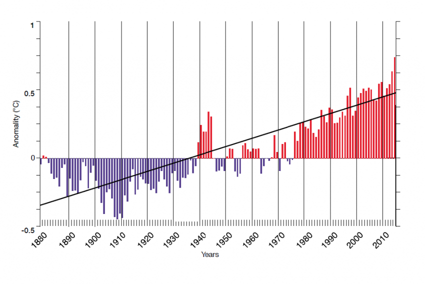
20.2 Ocean Skin
Bellenger Abstract
The ocean skin is composed of thin interfacial microlayers of temperature and mass of less than 1 mm where heat and chemical exchanges are controlled by molecular diffusion. It is characterized by a cooling of ∼−0.2 K and an increase in salinity of ∼0.1 g/kg (absolute salinity) relative to the water below. A surface observation-based air-sea CO2 flux estimate considering the variation of the CO2 concentration in these microlayers has been shown to lead to an increase in the global ocean sink of the anthropogenic CO2 by +0.4 PgC yr−1 (15% of the global sink). This study analyzes this effect in more details using a 15-year (2000–2014) simulation from an Earth System Model (ESM) that incorporates a physical representation of the ocean surface layers (diurnal warm layer and rain lenses) and microlayers. Results show that considering the microlayers increases the simulated global ocean carbon sink by +0.26 to +0.37 PgC yr−1 depending on assumptions on the chemical equilibrium. This is indeed about 15% of the global sink (2.04 PgC yr−1) simulated by the ESM. However, enabling the ocean skin adjustment to feedback on ocean carbon concentrations reduces this increase to only +0.13 (±0.09) PgC y−1. Coupled models underestimate the ocean carbon sink by ∼5% if the ocean skin effect is not included.
Bellenger Key Points
Key Points
Considering the ocean skin increases the global ocean \({CO}_2\) sink by +0.26 to +0.37 PgC \({yr}^{−1}\) (∼15% for 2000–2014) in an Earth System Model
Enabling the ocean skin adjustment to feedback on ocean carbon concentrations dampens this increase to +0.13 PgC \({yr}^{−1}\) (∼5% for 2000–2014)
This global adjustment depends on the \({CO}_2\) flux formulation and ultimately on the model capacity to transfer \({CO}_2\) into the ocean interior
Bellenger Plain Language Summary
The ocean skin is a thin layer of less than a millimeter that is in contact with the atmosphere, where the heat and chemical exchanges are controlled by molecular diffusion. It typically corresponds to a temperature at the ocean interface that is cooler by −0.2 K than the water at a depth of a millimeter. It also corresponds to a salinity that is slightly higher at the interface. Taking into account these temperature and salinity changes in this thin layer can change calculations of the global ocean carbon sink substantially. We use a global Earth System Model including a representation of the ocean skin to study this impact. We found an increase of 15% in the simulated global ocean carbon sink. This is consistent with past studies. Enabling the flux to feedback on the ocean carbon concentration significantly reduces its impact. We conclude by discussing the uncertainties in the global ocean carbon sink associated with the formulation of the carbon flux and the representation of the ocean skin.
20.3 Ocean Heat Content
While the atmosphere varies a bit year to year, over 90% of heat trapped by increased atmospheric greenhouse gas concentrations ends up in the oceans. There the accumulation of heat year-over-year is unambiguous.
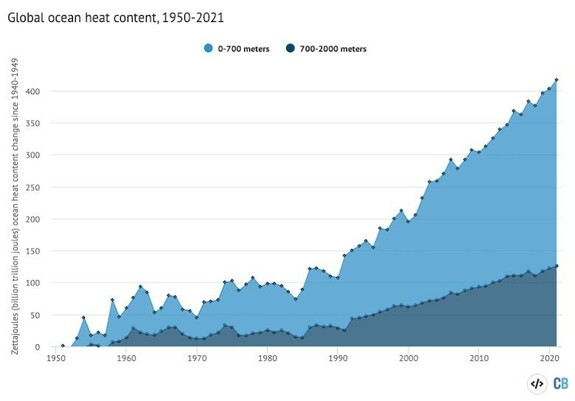
20.3.1 Deep Ocean Heat Content
Bagnell Abstract
The historical evolution of Earth’s energy imbalance can be quantified by changes in the global ocean heat content. However, historical reconstructions of ocean heat content often neglect a large volume of the deep ocean, due to sparse observations of ocean temperatures below 2000 m. Here, we provide a global reconstruction of historical changes in full-depth ocean heat content based on interpolated subsurface temperature data using an autoregressive artificial neural network, providing estimates of total ocean warming for the period 1946-2019. We find that cooling of the deep ocean and a small heat gain in the upper ocean led to no robust trend in global ocean heat content from 1960-1990, implying a roughly balanced Earth energy budget within −0.16 to 0.06 \(Wm^{−2}\) over most of the latter half of the 20th century. However, the past three decades have seen a rapid acceleration in ocean warming, with the entire ocean warming from top to bottom at a rate of 0.63 ± 0.13 \(Wm^{−2}\). These results suggest a delayed onset of a positive Earth energy imbalance relative to previous estimates, although large uncertainties remain.
Bagnell Memo
Over the past 15 years, the Argo program5 has deployed thousands of autonomous floats which provide continuous observations of the temperature in the upper half of the ocean, to a depth of 2000 m. This has allowed for a convergence in estimates of OHC over the last fifteen years2,5 and increased confidence in calculations of the ongoing EEI in light of independent confirmation from modern satellite observations2,6,7. However, several challenges exist for reducing uncertainty in estimates of total ocean warming and extending it over longer time periods. First, the deep ocean below 2000 m remains poorly observed, even during the Argo era, which leads to additional uncertainty on current estimates of total warming. While absolute temperature changes in the deep ocean are small8, the large volume of the ocean below 2000 m makes it a potentially meaningful contributor to the global heat inventory. Repeat hydrographic sampling indicates that the deep ocean may be warming significantly in some regions9, particularly the Southern Ocean8, whereas other regions may still be cooling as a response to cold periods in the past millennium10, making it critical to include the heat content of the deep ocean in global estimates of ocean warming. The second issue is that, prior to 2005, data collection was conducted primarily by scientific research vessels and ships of opportunity, leaving areas outside of major trade routes or research transects with few direct observations2,11. This leaves large gaps in the observational record that must be filled in order to estimate OHC.
Several methods have been devised to overcome these gaps in ocean temperature observations and to produce estimates of historical changes in OHC. One common approach applies objective mapping to interpolate the sparse temperature records in space and time. However, while these objective mapping products can reconstruct ocean temperatures back to ~1950, they do not extend below 2000 m due to the sparse sampling at these depths. Dynamical data-assimilation models offer an alternative approach to objective mapping and provide full-depth estimates of OHC, but data sparsity means these models are poorly constrained at depth, leading to large cross-model varianc. Another approach based on the passive transport of surface temperature anomalies into the interior ocean can also reconstruct full-depth temperature anomalies and OHC changes, but relies on the potentially incorrect assumption of steady-state circulation16 and is sensitive to the initial condition used in the simulation10,16 and to poorly known surface ocean temperatures dating back several millennia. Finally, statistical methods have been used to detect large-scale trends in the deep ocean temperature from repeat hydrographic sampling, but these have coarse spatial resolution and do not cover the period prior to the mid-1980s. An interpolation product based on in situ temperature data that covers the deep ocean below 2000 m, allowing for a full-depth OHC estimate, remains crucial to reliably estimating historical changes in EEI.
Here, we interpolate historical ocean temperature data using an autoregressive artificial neural network (ARANN) to produce a single consistent estimate of the top-to-bottom OHC change for 1946–2019 using in situ temperature data from the World Ocean Database. This approach adapts an established machine learning method to perform an iterative autoregression that adjusts spatio-temporal correlation scales over time from the in situ temperature data itself, and effectively propagates information from well-sampled times and regions to more sparsely sampled areas to produce global maps of temperature anomalies at roughly annual resolution.

Figure: Estimates of ocean heat content (OHC) changes for a the global ocean from the surface to seafloor, b the upper 700 m of the ocean, c the depth range 700–2000 m, and (d) the depth range 2000–5500 m. The mean estimates derived from this study (ARANN, blue) are shown with shading covering two standard deviations from the mean over the 240 ARANN ensemble members. The zero anomaly is defined such that the mean OHC of the ARANN estimate for the period 1946–2019 is zero. Also shown are the mean OHC anomaly from the IAP11 (red), NOAA12 (yellow), and JMA13 (purple) objective mapping products, which cover the 0–2000 m depth interval as shown in (b)–(c). These products have been adjusted to the mean ARANN OHC anomaly for 2005–2019. Shown for a the full ocean depth and d the deep ocean are OHC anomalies from passive ocean heat uptake models using Green’s functions (GF)16 (light blue) and an optimized mixing model (OPT-0015)10 (green). The passive ocean heat uptake products are adjusted to the mean ARANN anomaly for 1955–1985. Repeat hydrographic sampling (RHS) gives temperature trends since 1985 in the deep ocean9 (maroon; d). The RHS method gives a linear trend from 1985 to 2000 and from 2000 to 2015, which has been adjusted to the mean ARANN anomaly for 1985–2015.
Bagnell (2021) 20th century cooling of the deep ocean contributed to delayed acceleration of Earth’s energy imbalance (pdf)
20.4 El Niño - La Niña
Guardian
The El Niño-La Niña phenomenon is the biggest cause of year-to-year differences in weather in many regions. In La Niña years, the east-to-west Pacific trade winds are stronger, pushing warm surface waters to the west and drawing up deeper, cooler water in the east. El Niño events happen when the trade winds wane, allowing the warm waters to spread back eastwards, smothering the cooler waters and leading to a rise in global temperatures.
Nations bordering the west Pacific, including Indonesia and Australia, experience hotter and drier conditions, though China can suffer flooding in the Yangtze basin after big El Niños.
India’s monsoons, and rains in southern Africa can also be suppressed. Other regions, such as east Africa and the southern US, both of which have suffered recent droughts, can get more rain and flooding. In South America, southern regions are wetter, but the Amazon, already approaching a dangerous tipping point, is drier.
The effects of El Niño could also be felt as far as the northern hemisphere mid-latitudes, with a likelihood of wetter conditions in Spain from summer onwards and drier conditions on the eastern seaboard of the US in the following winter and spring.
The biggest unanswered question is whether climate change favoured more El Niño or more La Niña events. That is crucially important for countries looking at long-term adaptation, and will need much higher-resolution climate models. That can only come about with bigger computers.
Guardian (2023) Warning of unprecedented heatwaves as El Niño set to return in 2023
20.4.1 2023 Ocean Heat Surge
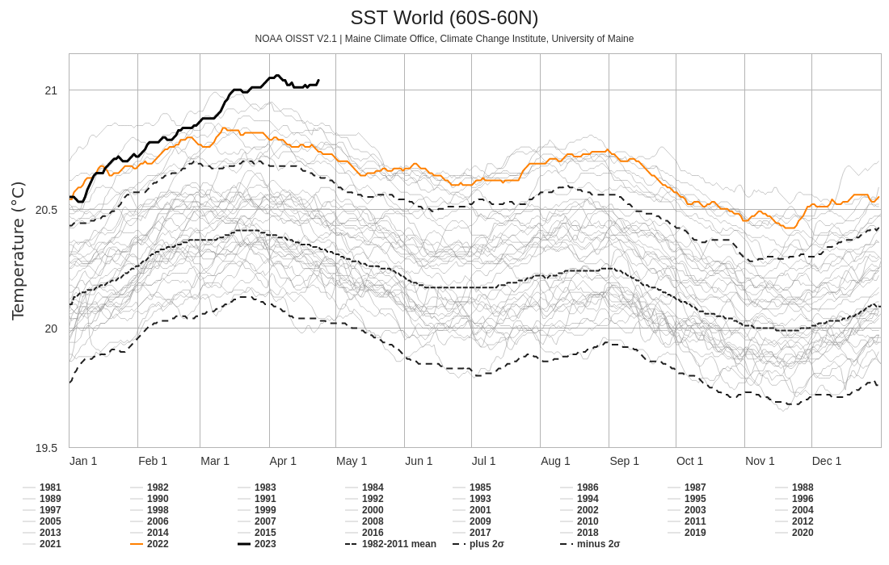
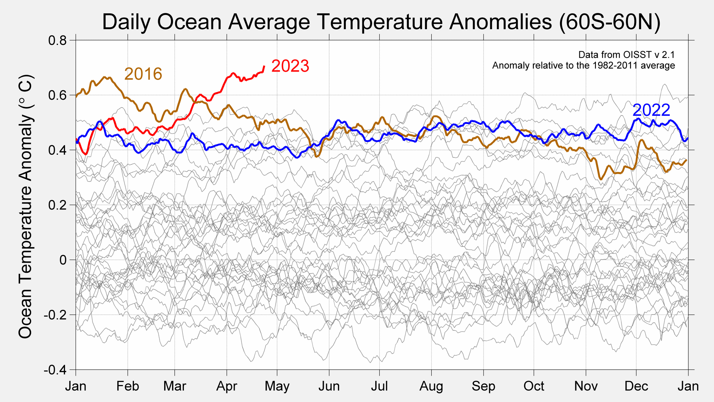
Climate ReAnlyzer Daily OST Chart)
Schuckmann Abstract
The Earth climate system is out of energy balance, and heat has accumulated continuously over the past decades, warming the ocean, the land, the cryosphere, and the atmosphere. According to the Sixth Assessment Report by Working Group I of the Intergovernmental Panel on Climate Change, this planetary warming over multiple decades is human-driven and results in unprecedented and committed changes to the Earth system, with adverse impacts for ecosystems and human systems. The Earth heat inventory provides a measure of the Earth energy imbalance (EEI) and allows for quantifying how much heat has accumulated in the Earth system, as well as where the heat is stored. Here we show that the Earth system has continued to accumulate heat, with 381±61 ZJ accumulated from 1971 to 2020. This is equivalent to a heating rate (i.e., the EEI) of 0.48±0.1 W m−2. The majority, about 89 %, of this heat is stored in the ocean, followed by about 6 % on land, 1 % in the atmosphere, and about 4 % available for melting the cryosphere. Over the most recent period (2006–2020), the EEI amounts to 0.76±0.2 W m−2. The Earth energy imbalance is the most fundamental global climate indicator that the scientific community and the public can use as the measure of how well the world is doing in the task of bringing anthropogenic climate change under control. Moreover, this indicator is highly complementary to other established ones like global mean surface temperature as it represents a robust measure of the rate of climate change and its future commitment. We call for an implementation of the Earth energy imbalance into the Paris Agreement’s Global Stocktake based on best available science. The Earth heat inventory in this study, updated from von Schuckmann et al. (2020), is underpinned by worldwide multidisciplinary collaboration and demonstrates the critical importance of concerted international efforts for climate change monitoring and community-based recommendations and we also call for urgently needed actions for enabling continuity, archiving, rescuing, and calibrating efforts to assure improved and long-term monitoring capacity of the global climate observing system. The data for the Earth heat inventory are publicly available, and more details are provided in Table 4.
Schuckmann (2023) Heat stored in the Earth system 1960–2020: where does the energy go? (pdf)
Henson
The El Niño-Southern Oscillation, which has a huge influence on global weather patterns, isn’t behaving as computer models predicted. That’s puzzling scientists.
ENSO is a recurring ocean-and-atmosphere pattern that warms and cools the eastern tropical Pacific through El Niño and La Niña events that last from one to three years. Once El Niño or La Niña emerges, the odds reliably shift toward hotter, colder, wetter, or drier conditions for various parts of the globe, from Oceania to North America to Africa. But though ENSO’s effects are well known, the phenomenon itself is notoriously tough to predict. And its slippery nature is complicating crucial multi-decade projections of climate.
Many aspects of human-caused climate change are playing out as long predicted, including overall warming of the global atmosphere and oceans as well as the intensification of rainfall extremes and the drying of many subtropical areas.
Not so for ENSO. Top global climate models have predicted for more than 20 years that the tropical Pacific would gradually shift toward an “El Niño-like” state, with the surface waters warming more rapidly toward the east than toward the west.
Instead, just the opposite is going on. The western tropical Pacific has warmed dramatically, as predicted, but unusually persistent upwelling of cool subsurface water has led to a slight drop in average sea surface temperature over much of the eastern tropical Pacific.
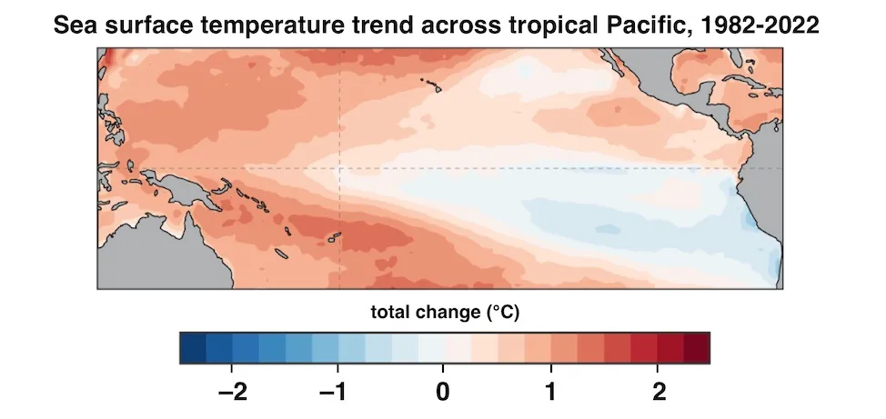
The result is a strengthening west-to-east temperature contrast that increasingly resembles La Niña. Scientists expect that El Niño events will continue to occur – such as the one predicted to arrive later this year – but they will take place on a backdrop of an ocean that looks more like La Niña.
All this is far more than an esoteric science matter. According to an ENSO Blog entry posted Jan. 26 at climate.gov: “How the sea surface temperature trend pattern will change has profound, worldwide implications. … If you are trying to make decisions based on projections of the future, you need to know the answer.
Among the impacts that could be notably different in a La Niña-dominated world:
Atlantic hurricane activity is substantially higher on average during La Niña than during El Niño.
The U.S. Sun Belt, including much of California, tends to get less rainfall and mountain snow during La Niña, with widespread drought becoming more likely. (There are occasional exceptions, such as the very wet winter of 2022-23 in the Southwest.)
The highly vulnerable Horn of Africa is more drought-prone during La Niña, while rains in the African Sahel tend to be more reliable.
Typhoons are more likely to slam China, the Philippines, and Vietnam – and less likely to strike Guam, Japan, and Taiwan – during La Niña.
Heavy rains and floods often plague eastern Australia during La Niña.
The southwest monsoon in India is often wetter than average.
There are hints — though not yet enough cases to pass statistical muster — that La Niña events themselves are becoming more frequent, which would go hand in hand with the evolving Pacific backdrop.
The La Niña-like temperature contrast in the tropical Pacific has now been strengthening for so long that it’s gotten tougher to ascribe to natural variability. It could be chalked up to a cool phase of the Pacific Decadal Oscillation, another recurring weather pattern that can span 20 to 30 years. Yet that phenomenon is largely influenced by ENSO itself.
Climate experts are thus ramping up efforts to diagnose what it is that the state-of-the-art models could be missing and whether the long-expected El Niño-like trend may yet turn up later in the century.
At the core of ENSO is the Walker Circulation, the large-scale flow of air over the Pacific tropics. On average, air rises above the very warm waters of the western Pacific and sinks across the eastern Pacific, where chilly water predominates. Completing the Walker Circulation loop (as shown in Figure 3 below) are westward flow a few miles above the Pacific tropics and eastward flow – the famed trade winds – at the surface.
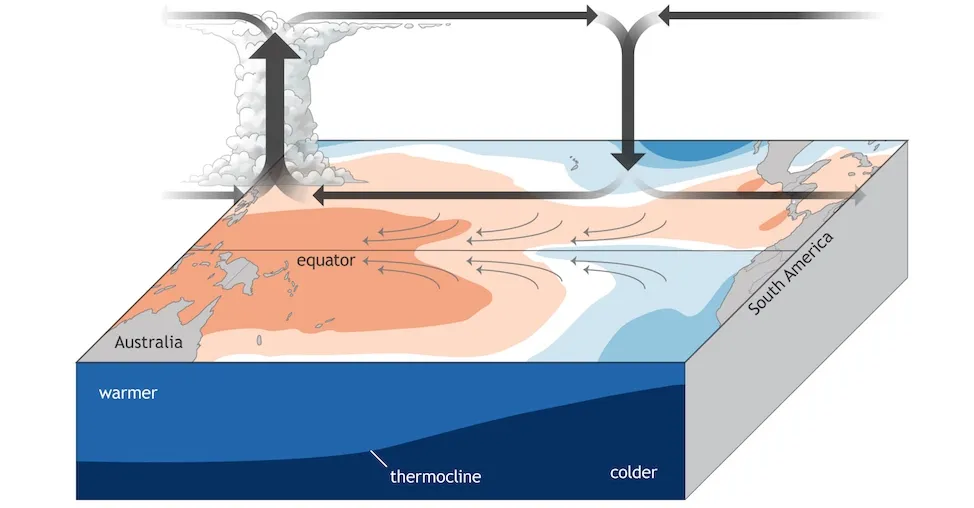
Fig: This schematic of average (neutral) conditions over the Pacific Ocean shows the Walker Circulation, with rising air and showers and thunderstorms to the west and descending air to the east. Trade winds (surface arrows) push warm water toward the west, allowing colder water to upwell toward the east. The depth of the upper Pacific Ocean is exaggerated in this schematic. (Image credit: climate.gov)
When the Walker Circulation is strong, as it is during La Niña, the east-to-west-blowing trade winds are boosted and there is more upwelling of cold water off Ecuador and Peru. When the Walker Circulation weakens, the trade winds slacken or even reverse, and the resulting westerly surface winds can push warm water all the way to the South American coast. The usual upwelling weakens, and an El Niño event is in place. The warm water leads to rising air thousands of miles farther east than usual, helping to suppress the Walker Circulation and torquing other weather patterns far away.
Given that El Niño is fighting against the grain of the usual atmospheric and oceanic conditions, it normally takes only about nine to 12 months before the tropics swing back toward a more typical Walker Circulation. In contrast, La Niña — with an extra-strong version of the Walker Circulation — can persist or recur for as long as three consecutive years, as it did from 2020-21 to 2022-23.
There’s no doubt that the tropical Pacific has behaved in more of a La Niña-like than El Niño-like fashion over the past several decades. The questions now center on whether the trend might still be natural variability — and if it’s not, what’s forcing it to happen.
The cold, remote Southern Ocean could be a big part of the Pacific’s puzzling trend. Much like the eastern tropical Pacific, the Southern Ocean is one of the few other areas on Earth where sea surface temperatures have cooled rather than warmed since the 1980s, in spite of pronounced surface warming over the Antarctic Peninsula and concerns about longer-term deep-ocean warming.
Usually it’s the tropical Pacific that triggers weather and climate effects at middle and higher latitudes, but the Southern Ocean itself may be influencing ENSO.
Adding to the complexities at hand, it’s possible that whatever factors are now pushing the tropical Pacific toward a La Niña-like state will eventually get overwhelmed by longer-term global warming. That could lead to the El Niño-like outcome that models have long projected — and thus vindicate the models, at least in the long run.
In one set of experiments with models that fully couple the atmosphere and ocean, Heede and colleagues found the observed La Niña-like state emerging and persisting for 20 to 100 years, depending on how quickly carbon dioxide is added. Somewhere between 50 and 100 years, the subtropical ocean circulation weakens and warms enough to cut down on cold upwelling, pushing the system toward El Niño-like conditions.
There are good reasons why ENSO is so difficult to capture in both seasonal and multi-decadal modeling. For just one example, consider the thermocline, the oceanic boundary that separates warmer near-surface water from cooler deep water. Across the tropical Pacific, the thermocline depth normally varies from about 450 feet in the west to only about 50 feet in the east. That’s paper-thin when compared to the 12,000 miles of distance from west to east along the Pacific equator, and thus difficult for global climate models to capture with precision.
“East Africa has been struggling with drought for most of the 21st century, including the last few years,” Seager noted. “The models predict that that region should be getting wetter, and it hasn’t. The fact that it hasn’t is largely consistent with what the equatorial Pacific Ocean is doing.
The U.S. Southwest will experience the landscape-parching effects of hotter weather no matter what ENSO does. But any continued tilt toward La Niña-like conditions would also tend to favor the prolonged deficits in rainfall and mountain snowfall that have plagued the region since 2000. Even the bountifully wet winter of 2022-23 is unlikely to turn the long-term tide. “The combined impact of warmer temps and potentially lower precipitation is not good news,”
Climate scientists love studying what happens in the tropical Pacific, but my point of view is that no one’s living there. We have to make the link from what happens in the tropical Pacific to what happens over land.
Henson (2023) A mystery in the Pacific is complicating climate projections
20.5 Ocean Acidification
Mackie
Our goal is to provide you with the background to understand the chemical and physical processes behind ocean acidification. This will allow you to evaluate the commentary on the web. We were motivated to write the series by the increasing number comments and posts in the blogosphere based on misconceptions about ocean acidification. However, despite taking 18 posts and 18,000 words we have only scratched the surface of the chemistry. This is not surprising as the concepts we have introduced do not stand alone. Inevitably we have had to leave some things out and simplified others. For each concept we have explained a dozen more cry out for their 15 minutes. Here is a negligently incomplete list of a further 18 Quite Important concepts – each deserving of at least a post – that we didn’t mention or skipped lightly over. There are hundreds more.
δ 13 C, Ψ, Activity coefficients and when and how to use them, Alkalinity: A really useful definition for alkalinity (i.e. one that is a measurable quantity), Buffer theory, Burial of CaCO 3 sediments, Carbon vs. oxygen stoichiometry for combustion of different fossil fuels, Congruent/incongruent dissolution, Conservative ions and charge balance in seawater, Dissolution of CaCO 3 above the lysocline, DOM, Fugacity, Inhibition of precipitation, Mass accumulation rate for CaCO 3 sediments, Mixed carbonates (incorporation of other elements), Net global production of CaCO 3 , different pH scales, Revelle Factor.
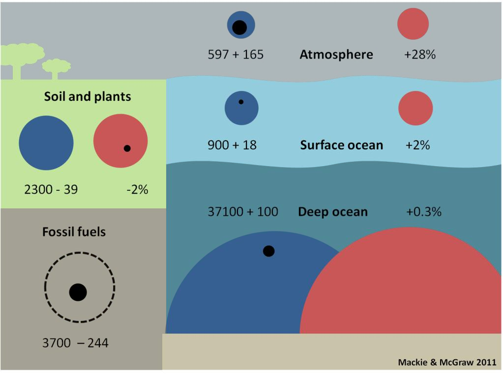
Figure: Carbon reservoirs as preindustrial size (blue circles) and modern size (red circles) with change since the industrial revolution (black circles). Numbers give size of preindustrial with amount of change (+ or –) and also express the change as a %. Size in gigatons of carbon = Gt C. (1 Gt = 1,000 million tons, i.e. billion tons).
Mackie Memo
The definition of an acid (in aqueous chemistry) is a substance that gives (or donates) an \(H^{+}\) (proton) to water to form $H_{3}O^{+} , while a base takes (or accepts) the proton. This means that each acid (or base) reacts with a base (or acid) to produce another acid-base pair.
Naive application of Le Chatelier’s principle is not good enough for complex chemistry. Le Chatelier’s Principle is a way to predict how a see-saw like equilibrium reaction responds when it is disturbed. It is a useful way to consider simple reactions. However, Le Chatelier’s principle only applies to single-step chemical reactions. It can’t be applied in a simple way to coupled or sequential reactions.
Mackie (2011) OA not not OK An introduction to the chemistry of Ocean Acidification (pdf) Mackie - Individual Chapters on SkepticalScience
20.5.1 Outgassing
Sealevel.info
Mankind is currently adding about 5 ppmv of CO2 (about 10½ PgC) to the atmosphere each year, but the atmospheric CO2 level is only rising at a rate of about 2.5 ppmv per year. The difference is the rate at which natural negative feedbacks (mainly terrestrial greening and absorption by the oceans) remove CO2 from the air: currently about 2.5 ppmv per year.
However, the solubility of gases like CO2 (or CH4) in water does decrease as the water gets warmer (per the temperature dependence of Henry’s law), so as the oceans warm they would outgas CO2, if nothing else changed. The capacity of the water to hold dissolved CO2 decreases by about 3% per 1°C by which the water warms.
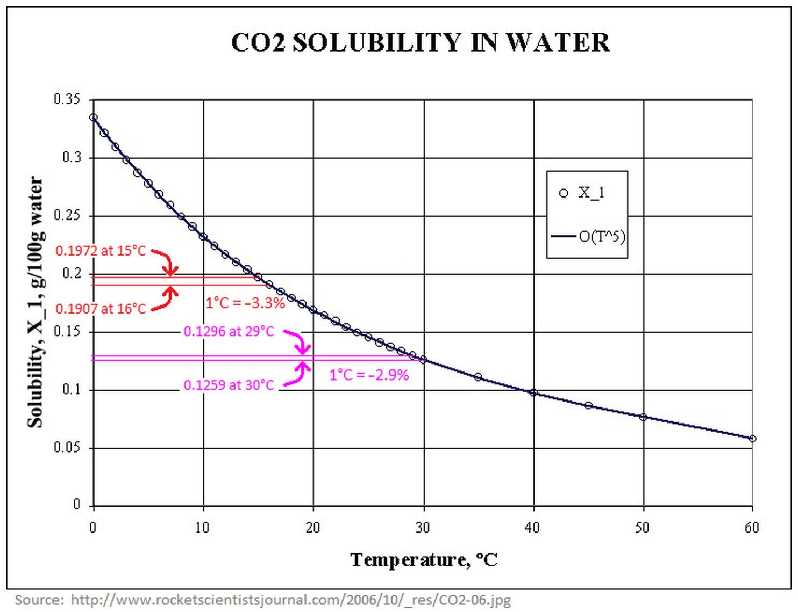
So, when the oceans are absorbing CO2, as is currently the case in most places other than the tropics, if the water warms then the oceans absorb CO2 slightly more slowly.
The effect of temperature change on the solubility of gases in water is surely one of the reasons that atmospheric CO2 levels swing up & down by about 90 ppmv over glaciation/deglaciation cycles. (There are almost certainly also biological [2] and/or ice sheet burial mechanisms at work, which increase the magnitude of glacial-interglacial CO2 swings.)
The CO2, in turn, works as a GHG to cause warming. That is a slight positive feedback mechanism.
That positive feedback loop is undoubtedly one of the causes for the apparent hysteresisin the temperature and CO2 records: Over the last million years, the Earth’s climate has tended to be either mild, as in our current interglacial (the Holocene), or, more of the time, heavily glaciated and cold, with relatively brief, unstable transitions between.
20.5.2 OAE - Ocean Alkalinity Enhancement
State of the planet
Ocean alkalinity enhancement (OAE) is a marine carbon dioxide removal (CDR) approach. Publicly funded research projects have begun, and philanthropic funding and start-ups are collectively pushing the field forward. This rapid progress in research activities has created an urgent need to learn if and how OAE can work at scale. The Best Practices Guide to OAE research contains 7 topics broken down into 13 chapters that compare and synthesise previously published methods and offer guidance for future research.
State of the planet (2023) Guide to Best Practices in Ocean Alkalinity Enhancement Research
20.6 Ocean-Atmosphere Carbon Balance
NASA
For eons, the world’s oceans have been sucking carbon dioxide out of the atmosphere and releasing it again in a steady inhale and exhale. The ocean takes up carbon dioxide through photosynthesis by plant-like organisms (phytoplankton), as well as by simple chemistry: carbon dioxide dissolves in water. It reacts with seawater, creating carbonic acid. Carbonic acid releases hydrogen ions, which combine with carbonate in seawater to form bicarbonate, a form of carbon that doesn’t escape the ocean easily.

Figure: The concentration of carbon dioxide (CO2) in ocean water (y axis) depends on the amount of CO2 in the atmosphere (shaded curves) and the temperature of the water (x axis). This simplified graph shows that as atmospheric CO2 increases from pre-industrial levels (blue) to double (2X) the pre-industrial amounts (light green), the ocean CO2 concentration increases as well. However, as water temperature increases, its ability dissolve CO2 decreases. Global warming is expected to reduce the ocean’s ability to absorb CO2, leaving more in the atmosphere…which will lead to even higher temperatures.
As we burn fossil fuels and atmospheric carbon dioxide levels go up, the ocean absorbs more carbon dioxide to stay in balance. But this absorption has a price: these reactions lower the water’s pH, meaning it’s more acidic. And the ocean has its limits. As temperatures rise, carbon dioxide leaks out of the ocean like a glass of root beer going flat on a warm day. Carbonate gets used up and has to be re-stocked by upwelling of deeper waters, which are rich in carbonate dissolved from limestone and other rocks.
In the center of the ocean, wind-driven currents bring cool waters and fresh carbonate to the surface. The new water takes up yet more carbon to match the atmosphere, while the old water carries the carbon it has captured into the ocean.
The warmer the surface water becomes, the harder it is for winds to mix the surface layers with the deeper layers. The ocean settles into layers, or stratifies. Without an infusion of fresh carbonate-rich water from below, the surface water saturates with carbon dioxide. The stagnant water also supports fewer phytoplankton, and carbon dioxide uptake from photosynthesis slows. In short, stratification cuts down the amount of carbon the ocean can take up.
The ocean does not take up carbon uniformly. It breathes, inhaling and exhaling carbon dioxide. In addition to the wind-driven currents that gently stir the center of ocean basins (the waters that are most limited by stratification), the ocean’s natural, large-scale circulation drags deep water to the surface here and there. Having collected carbon over hundreds of years, this deep upwelling water vents carbon dioxide to the atmosphere like smoke escaping through a chimney. The stronger upwelling brought by the cold phase of the Pacific Decadal Oscillation apparently enhanced the size of the chimney and let more carbon escape to the atmosphere.

Figure: The global oceans are connected by deep currents (blue lines) and surface currents (red). Carbon from the atmosphere enters the ocean depths in areas of deep water formation in the North Atlantic and offshore of the Antarctic Peninsula. Where deep currents rise towards the surface, they can release “fossil” carbon dioxide stored centuries ago.
After 30 years of measurements, the ocean carbon community is realizing that tracking human-induced changes in the ocean is not as easy as they thought it would be. It wasn’t a mere matter of measuring changes in carbon concentrations in the ocean over time because the natural carbon cycle in the ocean turned out to be a lot more variable than they imagined. “We discovered that natural processes play such an important role that the signals they generate can be as large as or larger than the anthropogenic signal,” says Feely. “Now we are trying to address how these decadal changes affect the uptake of carbon. Once we account for these processes, we can remove them from the data set and calculate the anthropogenic carbon dioxide as the residual.” But to track the increasingly complicated carbon balance sheet, the ocean community needed models, mathematical simulations of the natural world.
…
Stratification might wind up having competing effects on the overall carbon cycle, with saturation slowing carbon dioxide uptake in surface waters, but also suppressing venting.
“The link between the destruction of the ozone layer, the changing wind patterns, and the impact on the carbon cycle is the thing that makes Le Quéré’s paper unique,” says Feely. “It links back to man-made impacts on the climate.” The idea that the man-made ozone hole and global warming have changed the Southern Ocean carbon sink is “disturbing on the one hand, but extremely interesting also,”
Scientists realized that to understand the ocean carbon cycle, they are going to have to look for the human fingerprint in ocean circulation and biology, not just in ocean chemistry.
Water Encyclopedia
Of the three places where carbon is stored—atmosphere, oceans, and land biosphere—approximately 93 percent of the CO 2 is found in the oceans. The atmosphere, at about 750 petagrams of carbon (a petagram [Pg] is 10 15 grams), has the smallest amount of carbon.
Approximately 90 to 100 Pg of carbon moves back and forth between the atmosphere and the oceans, and between the atmosphere and the land biosphere. Although these exchange rates are large relative to the total amount of carbon stored in the atmosphere, the concentration of CO 2 was constant.
All trees, nearly all plants from cold climates, and most agricultural crops respond to increasing atmospheric CO 2 levels by increasing the amount of CO 2 they take up for photosynthesis .
The oceans contain about 50 times more CO 2 than the atmosphere and 19 times more than the land biosphere. CO 2 moves between the atmosphere and the ocean by molecular diffusion when there is a difference between CO 2 gas pressure (pCO 2 ) between the atmosphere and oceans. For example, when the atmospheric pCO 2 is higher than the surface ocean, CO 2 diffuses across the air-sea boundary into the sea water. The oceans are able to hold much more carbon than the atmosphere because most of the CO 2 that diffuses into the oceans reacts with the water to form carbonic acid and its dissociation products, bicarbonate and carbonate ions . The conversion of CO 2 gas into nongaseous forms such as carbonic acid and bicarbonate and carbonate ions effectively reduces the CO 2 gas pressure in the water, thereby allowing more diffusion from the atmosphere.
The oceans are mixed much more slowly than the atmosphere, so there are large horizontal and vertical changes in CO 2 concentration. In general, tropical waters release CO 2 to the atmosphere, whereas high-latitude oceans take up CO 2 from the atmosphere. CO 2 is also about 10 percent higher in the deep ocean than at the surface. The two basic mechanisms that control the distribution of carbon in the oceans are referred to as the solubility pump and the biological pump.
Solubility Pump.
The solubility pump is driven by two principal factors. First, more than twice as much CO 2 can dissolve into cold polar waters than in the warm equatorial waters. As major ocean currents (e.g., the Gulf Stream) move waters from the tropics to the poles, they are cooled and can take up more CO 2 from the atmosphere. Second, the high latitude zones are also places where deep waters are formed. As the waters are cooled, they become denser and sink into the ocean’s interior, taking with them the CO 2 accumulated at the surface. Biological Pump.
Another process that moves CO 2 away from the surface ocean is called the biological pump. Growth of marine plants (e.g., phytoplankton) takes CO 2 and other chemicals from sea water to make plant tissue. Microscopic marine animals, called zooplankton, eat the phytoplankton and provide the basis for the food web for all animal life in the sea. Because photosynthesis requires light, phytoplankton only grow in the nearsurface ocean, where sufficient light can penetrate.
Although most of the CO 2 taken up by phytoplankton is recycled near the surface, a substantial fraction, perhaps 30 percent, sinks into the deeper waters before being converted back into CO 2 by marine bacteria. Only about 0.1 percent reaches the seafloor to be buried in the sediments.
Scientists research the exchange of carbon dioxide between the atmosphere and ocean. This photograph shows the Ronald H. Brown, a research vessel of the National Oceanic and Atmospheric Administration, in the Equatorial Pacific Ocean during the GASEX II expedition in 2001. The floating instrument in the foreground measures a number of parameters associated with the transfer of CO2 across the air–sea interface. Scientists research the exchange of carbon dioxide between the atmosphere and ocean. This photograph shows the Ronald H. Brown, a research vessel of the National Oceanic and Atmospheric Administration, in the Equatorial Pacific Ocean during the GASEX II expedition in 2001. The floating instrument in the foreground measures a number of parameters associated with the transfer of CO 2 across the air–sea interface.
The CO 2 that is recycled at depth is slowly carried large distances by currents to areas where the waters return to the surface (upwelling regions). When the waters regain contact with the atmosphere, the CO 2 originally taken up by the phytoplankton is returned to the atmosphere. This exchange process helps to control atmospheric CO 2 concentrations over decadal and longer time scales.
n the 1980s, the oceans removed an estimated 2.0±0.6 Pg of anthropogenic CO 2 each year. Because humans are producing CO 2 at an everincreasing rate, the average ocean removal rate increased to 2.4±0.5 Pg of carbon each year in the 1990s.
The uptake of anthropogenic CO 2 by the oceans is driven by the difference in gas pressure in the atmosphere and in the oceans and by the air–sea transfer velocity. Because the pCO 2 is increasing in the atmosphere, CO 2 moves into the ocean in an attempt to balance the oceanic and atmospheric gas pressures.
The mechanisms that control the speed with which the CO 2 gas can move from the atmosphere to the oceans (air–sea transfer velocity) are not well understood today. Recent technological advances are helping scientists to better understand these mechanisms.
The transfer velocity is related to the surface roughness of the ocean and the wind speed. The difference in pCO 2 is related to the amount of carbon that is converted from CO 2 gas to other nongaseous carbon species in the sea water, like bicarbonate and carbonate ions. This so-called “buffer capacity” is what allows the oceans to hold so much carbon.
The relative concentrations of CO 2 (1%), bicarbonate ion (91%) and carbonate ion (8%) control the acidity (pH) of the oceans. Since CO 2 is an acid gas, the uptake of anthropogenic CO 2 uses up carbonate ions and lowers the oceanic pH. The carbonate ion concentration of surface sea water will decrease by an estimated 30 percent with a doubling of atmospheric CO 2 from preindustrial levels (280 to 560 ppm). As the carbonate ion concentration decreases, the buffer capacity of the ocean and its ability to take up CO 2 from the atmosphere is reduced.
Over the long term (millennial timescales), the ocean has the potential to take up approximately 85 percent of the anthropogenic CO 2 that is released to the atmosphere. As long as atmospheric CO 2 concentrations continue to rise, the oceans will continue to take up CO 2 . However, this reaction is reversible. If atmospheric CO 2 were to decrease in the future, the oceans will start releasing the accumulated anthropogenic CO 2 back out into the atmosphere.
The ultimate storage place for anthropogenic CO 2 must be reactions that bind the CO 2 in a manner that is not easily reversed. Dissolution of calcium carbonate in the oceans, for example, is a long-term storage place for CO 2 . As the oceans continue to take up anthropogenic CO 2 , it will penetrate deeper into the water column, lowering the pH and making the waters more corrosive to calcium carbonate. The problem is that carbonate dissolution typically occurs in the deep ocean, well removed from the anthropogenic CO 2 taken up in the surface waters. In portions of the North Atlantic and North Pacific Oceans, however, anthropogenic CO 2 may have already penetrated deep enough to influence the dissolution of calcium carbonate in the water column.
Sediment Burial.
Burial of plant and animal material into the sediments can also provide long-term storage of anthropogenic CO 2 . Interestingly, almost no phytoplankton seem to grow faster in higher CO 2 environments, unlike many land plants. This is because phytoplankton growth in the oceans is generally limited by the availability of light and chemicals other than CO 2 , principally nitrogen and phosphorus but also smaller amounts of iron, zinc, and other micronutrients.
One proposed approach for enhancing carbon removal from the atmosphere is to enhance phytoplankton growth by fertilizing specific regions of the ocean with a relatively inexpensive biologically limiting chemical like iron. The hypothesis is that the resulting bloom of oceanic plants would remove CO 2 from the atmosphere then transport that carbon into the deep ocean or sediments, effectively removing it from the short-term budget. The effectiveness of the “iron hypothesis” is being tested with several research efforts attempting to scale up iron fertilization experiments.
Other carbon sequestration approaches, including direct injection of liquefied CO 2 into the deep ocean, are also being examined. Further research is necessary to determine whether any of these techniques will be effective or economically feasible. Implementation of these approaches may depend, in large part, on policy decisions made at national and international levels.
NOAA PMEL
Air-sea gas exchange is a physio-chemical process, primarily controlled by the air-sea difference in gas concentrations and the exchange coefficient, which determines how quickly a molecule of gas can move across the ocean-atmosphere boundary. It takes about one year to equilibrate CO2 in the surface ocean with atmospheric CO2, so it is not unusual to observe large air-sea differences in CO2 concentrations. Most of the differences are caused by variability in the oceans due to biology and ocean circulation. The oceans contain a very large reservoir of carbon that can be exchanged with the atmosphere because the CO2 reacts with water to form carbonic acid and its dissociation products. As atmospheric CO2 increases, the interaction with the surface ocean will change the chemistry of the seawater resulting in ocean acidification.
Evidence suggests that the past and current ocean uptake of human-derived (anthropogenic) CO2 is primarily a physical response to rising atmospheric CO2 concentrations. Whenever the partial pressure of a gas is increased in the atmosphere over a body of water, the gas will diffuse into that water until the partial pressures across the air-water interface are equilibrated. However, because the global carbon cycle is intimately embedded in the physical climate system there exist several feedback loops between the two systems. For example, increasing CO2 modifies the climate which in turn impacts ocean circulation and therefore ocean CO2 uptake. Changes in marine ecosystems resulting from rising CO2 and/or changing climate can also result in changes in air-sea CO2 exchange. These feedbacks can change the role of the oceans in taking up atmospheric CO2 making it very difficult to predict how the ocean carbon cycle will operate in the future.

National Geographic
Warming is speeding up. The top part of the ocean is warming up about 24 percent faster than it did a few decades ago, and that rate is likely to increase in the future.
New Scientist
As the world’s oceans warm, their massive stores of dissolved carbon dioxide may be quick to bubble back out into the atmosphere and amplify the greenhouse effect, according to a new study.
The oceans capture around 30 per cent of human carbon dioxide emissions and hide it in their depths. This slows the march of global warming somewhat. But climate records from the end of the last ice age show that as temperatures climb, the trend reverses and the oceans emit CO2, which exacerbates warming.
Previous studies have suggested that it takes between 400 and 1300 years for this to happen. But now the most precise analysis to date has whittled that figure down. We now think the delay is more like 200 years, possibly even less,
RealClimate
The oceans are presently taking up about 2 Gton C per year, a significant dent in our emissions of 7 Gton C per year. This could slow in the future, as overturning becomes inhibited by stratification, as the buffer loses its capacity due to acidification. Eventually, the fluxes could reverse as with a decrease in CO2 solubility due to ocean warming.
The situation today is complicated somewhat by a carbon spike transient. Atmospheric CO2 is rising so quickly that the terrestrial biosphere and the ocean carbon reservoirs find themselves far out of equilibrium. In attempting to keep up, the other reservoirs are taking up massive amounts of CO2. If emissions were to stop today, it would take a few centuries for the atmosphere to equilibrate, and it would contain something like 25% of our emitted CO2.
RealClimate
The ocean has a tendency to take up more carbon as the CO2 concentration in the air rises, because of Henry’s Law, which states that in equilibrium, more in the air means more dissolved in the water. Stratification of the waters in the ocean, due to warming at the surface for example, tends to oppose CO2 invasion, by slowing the rate of replenishing surface waters by deep waters which haven’t taken up fossil fuel CO2 yet.
The Southern Ocean is an important avenue of carbon invasion into the ocean, because the deep ocean outcrops here. Le Quere et al. [2007] diagnosed the uptake of CO2 into the Southern Ocean using atmospheric CO2 concentration data from a dozen or so sites in the Southern hemisphere. They find that the Southern Ocean has begun to release carbon since about 1990, in contrast to the model predictions that Southern Ocean carbon uptake should be increasing because of the Henry’s Law thing. We have to keep in mind that it is a tricky business to invert the atmospheric CO2 concentration to get sources and sinks. The history of this type of study tells us to wait for independent replication before taking this result to the bank.
Le Quere et al propose that the sluggish Southern Ocean CO2 uptake could be due to a windier Southern Ocean. Here the literature gets complicated. The deep ocean contains high concentrations of CO2, the product of organic carbon degradation (think exhaling fish). The effect of the winds is to open a ventilation channel between the atmosphere and the deep ocean. Stratification, especially some decades from now, would tend to shut down this ventilation channel. The ventilation channel could let the deep ocean carbon out, or it could let atmospheric carbon in, especially in a few decades as the CO2 concentration gets ever higher (Henry’s Law again). I guess it’s fair to say that models are not decisive in their assessment about which of these two factors should be dominating at present. The atmospheric inversion method, once it passes the test of independent replication, would trump model predictions of what ought to be happening, in my book.
A decrease in ocean uptake is more clearly documented in the North Atlantic by Schuster and Watson [2007]. They show surface ocean CO2 measurements from ships of opportunity from the period 1994-1995, and from 2002-2005. Their surface ocean chemistry data is expressed in terms of partial pressure of CO2 that would be in equilibrium with the water. If the pCO2 of the air is higher than the calculated pCO2 of the water for example, then CO2 will be dissolving into the water.
The pCO2 of the air rose by about 15 microatmospheres in that decade. The strongest Henry’s Law scenario would be for the ocean pCO2 to remain constant through that time, so that the air/sea difference would increase by the 15 microatmospheres of the atmospheric rise. Instead what happened is that the pCO2 of the water rose twice as fast as the atmosphere did, by about 30 microatmospheres. The air-sea difference in pCO2 collapsed to zero in the high latitudes, meaning no CO2 uptake at all in a place where the CO2 uptake might be expected to be strongest.
One factor that might be changing the pressure of CO2 coming from the sea surface might be the warming surface waters, because CO2 becomes less soluble as the temperature rises. But that ain’t it, as it turns out. The surface ocean is warming in their data, except for the two most tropical regions, but the amount of warming can only explain a small fraction of the CO2 pressure change. The culprit is not in hand exactly, but is described as some change in ocean circulation, caused maybe by stratification or by the North Atlantic Oscillation, bringing a different crop of water to the surface. At any event, the decrease in ocean uptake in the North Atlantic is convincing.
Canadell et al [2007] claim to see the recent sluggishness of natural CO2 uptake in the rate of atmospheric CO2 rise relative to the total rate of CO2 release (from fossil fuels plus land use changes). They construct records of the atmospheric fraction of the total carbon release, and find that it has increased from 0.4 back in about 1960, to 0.45 today. Carbon cycle models (13 of them, from the SRES A2 scenario) also predict that the atmospheric fraction should increase, but not yet. For the time period from 1960 to 2000, the models predict that we would find the opposite of what is observed: a slight decrease in the atmospheric fraction, driven by increasing carbon uptake into the natural world. Positive feedbacks in the real-world carbon cycle seem to be kicking in faster than anticipated, Canadell et al conclude.
There is no real new information in the Canadell et al [2007] analysis on whether the sinking sink is in the ocean or on land. They use an ocean model to do this bookkeeping, but we have just seen how hard it is to model or even understand some of the observed changes in ocean uptake. In addition to the changing ocean sink, drought and heat wave conditions may change the uptake of carbon on land. The infamously hot summer of 2003 in Europe for example cut the rate of photosynthesis by 50%, dumping as much carbon into the air as had been taken up by that same area for the four previous years [Ciais et al., 2005].
The warming at the end of the last ice age was prompted by changes in Earth’s orbit around the sun, but it was greatly amplified by the rising CO2 concentration in the atmosphere. The orbits pushed on ice sheets, which pushed on climate. The climate changes triggered a strong positive carbon cycle feedback which is, yes, still poorly understood.
Now industrial activity is pushing on atmospheric CO2 directly. The question is when and how strongly the carbon cycle will push back.
20.6.1 Air-Sea Flux Calculation
Woolf Abstract
The presence of vertical temperature and salinity gradients in the upper ocean and the occur- rence of variations in temperature and salinity on time scales from hours to many years complicate the calculation of the flux of carbon dioxide (CO 2 ) across the sea surface. Temperature and salinity affect the interfacial concentration of aqueous CO 2 primarily through their effect on solubility with lesser effects related to saturated vapor pressure and the relationship between fugacity and partial pressure. The effects of temperature and salinity profiles in the water column and changes in the aqueous concentration act primarily through the partitioning of the carbonate system. Climatological calculations of flux require atten- tion to variability in the upper ocean and to the limited validity of assuming ‘‘constant chemistry’’ in trans- forming measurements to climatological values. Contrary to some recent analysis, it is shown that the effect on CO 2 fluxes of a cool skin on the sea surface is large and ubiquitous. An opposing effect on calculated fluxes is related to the occurrence of warm layers near the surface; this effect can be locally large but will usually coincide with periods of low exchange. A salty skin and salinity anomalies in the upper ocean also affect CO 2 flux calculations, though these haline effects are generally weaker than the thermal effects.
Woolf Memo
The significance of precise temperatures can be readily understood from two facts. First, atmospheric and upper ocean CO 2 concentrations are almost in balance globally, with a net influx into the contemporary ocean of only approximately 2% of the diffusive exchange. Second, the efflux and influx depend on the fugacity or partial pressure of CO 2 (pCO 2 ) in the upper ocean and atmosphere, respectively, and the sensitivity of the fugacity in seawater is estimated at more than 4% per degree Kelvin temperature change. There appears to be a serious risk that mishandling temperature even slightly (i.e., biases of 0.1 K and less) can lead to substantial errors in calculated net flux.
Thermal Skin Effect
The cool skin [e.g., Donlon et al., 1999, 2002] is the phenomenon that the top millimeter or so of the upper ocean (the ‘‘thermal skin’’) is generally slightly cooler than the water below (the ‘‘mixed layer’’). There have been several attempts to estimate the error in the net global CO2 uptake if the thermal skin effect is neglected. Various studies reported an increased uptake of up to one third of the uncorrected uptake; for example, Robertson and Watson [1992] reported a correction of 0.6 PgC/yr ), while Van Scoy et al. [1995] estimated 0.4 PgC/yr.
There are a large number of thermal and haline effects that can potentially alter the air-sea flux of carbon dioxide (and other gases). In this paper, we provide a careful and detailed treatment of the thermal effects and also briefly discuss the haline effects. Generally, these analogous haline effects are smaller than the thermal effects, but worth including in a thorough calculation.
We have deliberately omitted another connection between temperature and gas fluxes: the coupling of heat and gas fluxes through irreversible thermodynamics. In principle that coupling also affects CO 2 fluxes, but the effect is negligible for all practical purposes. We also assume that the gas at the interface will be in perfect equilibrium with the concentration in the lower atmosphere. That assumption requires neglect of vertical gradients in the marine atmospheric boundary layer and the ‘‘kinetic layer’’ immediately above the sea surface. Some effects of aqueous carbon chemistry are included, but we have assumed that hydration and dehydra- tion rates are too low to significantly alter the transfer velocity of CO 2
Woolf (2017) On the calculation of air-sea fluxes of CO2 in the presence of temperature and salinity gradients (pdf)
20.6.2 Fungus fast track carbon
Gartwaite
New research focused on interactions among microbes in water suggests fungal microparasites play a bigger than expected role in aquatic food webs and the global carbon cycle.
New research shows a crucial piece has been missing from the conventional explanation for what happens between this first “fixing” of CO2 into phytoplankton and its eventual release to the atmosphere or descent to depths where it no longer contributes to global warming. The missing piece? Fungus.
“Basically, carbon moves up the food chain in aquatic environments differently than we commonly think it does,” said Anne Dekas, an assistant professor of Earth system science at Stanford University. Dekas is the senior author of a paper published June 1 in Proceedings of the National Academy of Sciences that quantifies how much carbon goes into parasitic fungi that attack microalgae.
Researchers until now have predicted that most carbon fixed into colonies of hard-shelled, single-celled algae known as diatoms then funnels directly into bacteria – or dissolves like tea in the surrounding water, where it’s largely taken up by other bacteria.
Conventional thinking assumes carbon escapes from this microbial loop mainly through larger organisms that graze on the bacteria or diatoms, or through the CO2 that returns to the atmosphere as the microbes breathe.
This journey is important in the context of climate change. “For carbon sequestration to occur, carbon from CO2 needs to go up the food chain into big enough pieces of biomass that it can sink down into the bottom of the ocean,” Dekas said. “That’s how it’s really removed from the atmosphere. If it just cycles for long periods in the surface of the ocean, it can be released back to the air as CO2.”
It turns out fungus creates an underappreciated express lane for carbon, “shunting” as much as 20 percent of the carbon fixed by diatoms out of the microbial loop and into the fungal parasite. “Instead of going through this merry-go-round, where the carbon could eventually go back to the atmosphere, you have a more direct route to the higher levels in the food web,” Dekas said.
20.6.3 Ocean Carbon Sink
Gruber Abstract
The ocean has absorbed 25 ± 2% of the total anthropogenic CO2 emissions from the early 1960s to the late 2010s, with rates more than tripling over this period and with a mean uptake of –2.7 ± 0.3 Pg C year–1 for the period 1990 through 2019. This growth of the ocean sink matches expectations based on the increase in atmospheric CO2, but research has shown that the sink is more variable than long assumed. The sink stagnated during the 1990s with rates hovering around –2 Pg C year–1, but strengthened again after approximately 2000, taking up around –3 Pg C year–1 for 2010–2019. The most conspicuous changes in uptake occurred in the high latitudes, especially the Southern Ocean. These variations are caused by changes in weather and climate, but a volcanic eruption-induced reduction in the atmospheric CO2 growth rate and the associated global cooling contributed as well Understanding the variability of the ocean carbon sink is crucial for policy making and projecting its future evolution, especially in the context of the UN Framework Convention on Climate Change stocktaking activities and the deployment of CO2 removal methods. This goal will require a global-level effort to sustain and expand the current observational networks and to better integrate these observations with models.
Gruber Key Points
The long-term trend in the ocean carbon sink since the early 1960s was primarily driven by the increasing uptake of anthropogenic CO2. Although the ocean is expected to have lost a few petagrams of natural CO2 to the atmosphere in response to ocean warming, this loss cannot be quantiied conclusively with observations.
The oceanic uptake of anthropogenic CO2 scaled proportionally with the increase in atmospheric CO2 between the early 1960s and late 2010s, as expected given the quasi-exponential growth of atmospheric CO2 during this period.
The average ocean uptake rate of –2.7±0.3PgCyear–1 for the period 1990 through 2019 is commensurate with asensitivity β of 1.4±0.1PgC per ppm atmospheric CO2, suggesting a trend in the uptake of –0.4±0.1PgCyear–1 per decade.
The annual meanocean carbon sink varies by about ±20% around this trend, primarily caused by changes in the sources and sinks of natural CO2, with a lesser role for variations in atmospheric CO2 growth rates impacting the uptake of anthropogenic CO2.
The net oceanic uptake rate of CO2 will likely decrease in the future owing to several converging trends: reduced emissions of CO2 leading to reduced atmospheric CO2 growth rates in response to climate policy; reduced storage capacity owing to continuing ocean acidiication; and enhanced outgassing of natural CO2 owing to ocean warming and changes in ocean circulation and biology.
Gruber Summary
The strength of the ocean carbon sink has tripled from the 1960s until the present. Thus, the ocean has maintained its key role as a sink for the CO2 emitted into the atmosphere as a consequence of human activities, removing about 25 ± 2% of the total emissions over six decades. The strengthening of the ocean sink has been largely driven by the increas-ing uptake of anthropogenic CO2 in response to the rise in atmospheric CO2, leading to a strong proportionality between the two. By contrast, the contribution from changes in the natural carbon cycle has been small so far, consistent with the assumption that the ocean circula-tion and biological pump was overall in steady state. However, new insights and observations publishedin the past decade challenge this assumption, especially on shorter timescales, suggesting an ocean that is more variable than previously recognized. New evidence also sug-gests over the past three decades a loss of natural CO2 to the atmosphere due to ocean warming and changes in ocean circulation. If confirmed, such a loss suggests an ocean carbon sink that is rather sensitive to climate change.
An ocean sink that is more sensitive to climate change than currently assumed in coupled carbon-climate models52 would imply that the ocean will take up less CO2 from the atmosphere in the future than anticipated. This would leave a larger fraction of the emissions in the atmosphere, causing additional global warming and climate change. In other words, the ocean carbon-climate feedback could be more positive than suggested by current coupled carbon-climate models. Moreover, the finding of the ocean sink potentially being more sensitive to changes in atmospheric CO2 growth rates than previously recognized implies a stronger than anticipated decline of the ocean carbon sink in ambitious mitigation scenarios.
The implications are large and far-reaching. Any reduction in ocean carbon uptake compared with current assumptions would require even stronger investments into decarbonization strategies, making the achievement of specific global warming targets harder. It also reduces the efficacy of the negative emission approaches that aim to curb climate change by removing CO2 from the atmosphere using land-based139,140 or ocean-based141 approaches.
Gruber (2023) Trends and variability in the ocean carbon sink
DeVries
Abstract
This contribution to the RECCAP2 (REgional Carbon Cycle Assessment and Processes) assessment analyzes the processes that determine the global ocean carbon sink, and its trends and variability over the period 1985–2018, using a combination of models and observation-based products. The mean sea-air CO2 flux from 1985 to 2018 is −1.6 ± 0.2 PgC yr−1 based on an ensemble of reconstructions of the history of sea surface pCO2 (pCO2 products). Models indicate that the dominant component of this flux is the net oceanic uptake of anthropogenic CO2, which is estimated at −2.1 ± 0.3 PgC yr−1 by an ensemble of ocean biogeochemical models, and −2.4 ± 0.1 PgC yr−1 by two ocean circulation inverse models. The ocean also degasses about 0.65 ± 0.3 PgC yr−1 of terrestrially derived CO2, but this process is not fully resolved by any of the models used here. From 2001 to 2018, the pCO2 products reconstruct a trend in the ocean carbon sink of −0.61 ± 0.12 PgC yr−1 decade−1, while biogeochemical models and inverse models diagnose an anthropogenic CO2-driven trend of −0.34 ± 0.06 and −0.41 ± 0.03 PgC yr−1 decade−1, respectively. This implies a climate-forced acceleration of the ocean carbon sink in recent decades, but there are still large uncertainties on the magnitude and cause of this trend. The interannual to decadal variability of the global carbon sink is mainly driven by climate variability, with the climate-driven variability exceeding the CO2-forced variability by 2–3 times. These results suggest that anthropogenic CO2 dominates the ocean CO2 sink, while climate-driven variability is potentially large but highly uncertain and not consistently captured across different methods.
Plain Language Summary
The second REgional Carbon Cycle Assessment and Processes effort, or RECCAP2, provides a comprehensive assessment of global and regional greenhouse gas budgets. This paper focuses on the ocean carbon sink, and investigates the processes that control its magnitude, trends and variability. Observation-based techniques estimate that the net transfer of CO2 from the atmosphere to the ocean, averaged over 1985–2018, is 1.6 billion tonnes of carbon per year, and that oceanic CO2 uptake is increasing by 0.61 billion tonnes of carbon per year each decade. Models say that most of this CO2 entering the ocean, and its increase over time, is driven by anthropogenic CO2 emissions, which causes the ocean to take up 2.1–2.4 billion tonnes of carbon per year. There are some hints that climate change might be accelerating ocean carbon uptake, but the errors in our estimates are too large to know for sure right now. Our methods and observations will have to be improved in order to better detect the impact of climate change on the ocean carbon sink.
X thread
Observation-based techniques estimate that the net transfer of carbon dioxide, CO2, from the atmosphere to the ocean, averaged over 1985–2018, is 1.6 billion tonnes of carbon per year, and that oceanic CO2 uptake is increasing by 0.61 billion tonnes of carbon per year each decade. Models say that most of this CO2 entering the ocean, and its increase over time, is driven by anthropogenic CO 2 emissions, which causes the ocean to take up 2.1–2.4 billion tonnes of carbon per year. There are some hints that climate change might be accelerating ocean carbon uptake, but the errors in our estimates are too large to know for sure right now.
DeVries (2023) Magnitude, Trends, and Variability of the Global Ocean Carbon Sink From 1985 to 2018
20.7 Sea Level Rise
Spratt
The paleoclimate record tells us that, in the long run, each one-degree of warming brings 10-20 meters (32- 66 feet) of sea level rise.
Hunziker (2023) The Truth About IPCC Reports
Hausfather
Sea level rise (SLR) is one of the most severe impacts of climate change, with rising waters threatening to inundate small-island nations and coastal regions by the end of the century.
At the same time, SLR is one of the impacts with the largest uncertainties, with different studies projecting widely different ranges over the 21st century.
The Earth’s oceans have already risen by around 0.2m since the late 1800s, with the rate of SLR accelerating in recent decades. In its 2013 fifth assessment report (AR5), the Intergovernmental Panel on Climate Change (IPCC) estimated that SLR was “unlikely” to exceed 1m this century, even if emissions were very high.
However, a number of studies published in the years since then suggest that the worst-case projections for SLR could be much higher – up to 2m or more this century.
With this week’s release of the IPCC Special Report Ocean and Cryosphere in a Changing Climate (SROCC), it is useful to take a look at the current understanding of how sea level has changed in the past and may change in the future.
In this explainer, Carbon Brief examines estimates of historical sea level rise and the evidence that rates are accelerating. It explores the drivers of historical and future sea level rise, including thermal expansion of water, melting glaciers and melting ice sheets. Finally, it compares the worst-case projections from the IPCC with other studies published before and after AR5 was released.
Reconstructing past changes in global sea levels is far from a simple task. While high-quality satellite measurements with global coverage are available since the early 1990s, prior to that researchers have to rely on tide gauges scattered around the world.
These tide gauges primarily cover coastal regions, leaving it up to researchers to figure out how best to fill the gaps. Tide gauges are also subject to factors that can complicate the interpretation of local sea level changes, namely subsidence (sinking land) or isostatic rebound (rising land due to melting glaciers).
Sea levels have risen by between 0.18 and 0.2m (180 to 200mm) since 1900.
Rates of change in global sea levels are shown as longer-term 20-year averages because individual years are sensitive to global surface temperatures; El Niño years where temperatures are a bit warmer tend to have more rapid SLR than cooler La Niña years.
The current rate of sea level rise – as measured by accurate satellite altimeters – is around 50% faster than was experienced in the 1940s.
Melting glaciers can affect the shape and gravitational field of the Earth, causing regional fluctuations in sea levels. Sediment compaction, plate tectonics and localised subsidence can all play a role in specific regions.
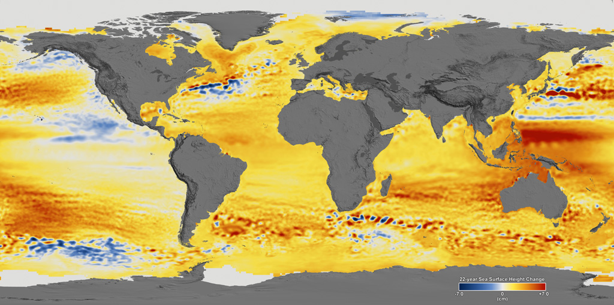
Figure: Global mean sea level from 1992-2014 based on data collected from the TOPEX/Poseidon, Jason-1 and Jason-2 satellite altimeters. Figure from the NASA Scientific Visualization Studio.
One of the major drivers of the SLR the world has experienced in recent decades is not from melting glaciers or ice sheets. Rather, it is driven by the thermal expansion of water. As the ocean warms, seawater becomes less dense and expands, raising sea levels.
The rapid increase in ocean heat content has led to around 19mm of sea level rise just from thermal expansion between 1993 and 2010, around a third of the total increase of 54mm.
While glacier melt and thermal expansion were responsible for the majority of historical SLR, this has been changing in recent years. There are now larger contributions to SLR coming from ice sheet melt and changes in land water storage – driven in part by groundwater depletion for irrigation.
Since AR5 in 2013, a large number of new studies on future SLR have been published. Many of these have shown substantially higher worst-case SLR estimates by the end of the 21st century than those published in the AR5 – largely due to a reassessment of the potential losses from Antarctic and Greenland ice sheets.
Since the publication of the IPCC report in 2013, we’ve seen the range of future SLR projections expand significantly, with some studies suggesting the possibility of up to 2.5m of global mean SLR by 2100.
There are a number of factors driving the uncertainty in future SLR amounts and rates, but the behaviour of the Antarctic and Greenland ice sheets in a warming climate is, perhaps, one of the largest contributors to this uncertainty. In particular, as new studies have come out suggesting the possibility of larger contributions to sea level rise from the Antarctic ice sheet than previously thought, we’ve seen the upper bound of future SLR projections climb upwards.
One study, published in Nature in 2016, suggested that a previously unconsidered process known as “marine ice-cliff instability” (MICI) meant the glaciers in the Antarctic were more unstable than scientists had thought. The paper concluded that “Antarctica has the potential to contribute more than a metre of SLR by 2100 and more than 15m by 2500” if future emissions are very high.
The IPCC reports have tended to err on the side of providing intentionally cautious and conservative estimates of SLR, rather than focusing on less likely, extreme possibilities that would be of high consequence, should they occur.
The IPCC Special Report Ocean and Cryosphere in a Changing Climate (SROCC) considered potential 21st century SLR estimates higher than those in the IPCC AR5.
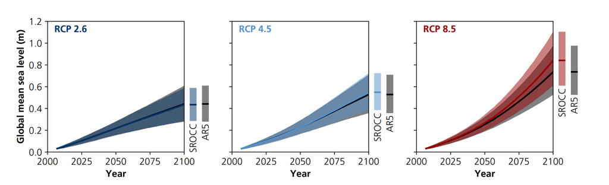
Figure: Projected change in global average sea level during the 21st century (metres), relative to the average for 1986-2005. Each panel shows projections from the current report (SROCC, coloured line and area) relative to the projections made in AR5 (black line and grey area). Left: The low emissions RCP2.6 scenario. Centre: The medium emissions RCP4.5 pathway. Right: The very high emissions RCP8.5 scenario. Source: IPCC SROCC figure 4.9.
Even these new estimates may end up being conservative. For example, a recent study by Prof Jonathan Bamber at the University of Bristol and colleagues brought together a group of 22 experts to assess their views of the likelihood of different future SLR scenarios. They found that a global SLR exceeding 2m by 2100 “lies within the 90% uncertainty bounds for a high-emission scenario”. This is more than twice the upper value found in the IPCC AR5.
Hausfather 2021 (Carbonbrief Explainer)
IPCC
In its most recent assessment, the Intergovernmental Panel on Climate Change said the sea level was unlikely to rise beyond 1.1 metre (3.6ft) by 2100.
But climate researchers from the University of Copenhagen’s Niels Bohr Institute believe levels could rise as much as 1.35 metres by 2100, under a worst-case warming scenario.
“The models used to base predictions of sea level rise on presently are not sensitive enough,” he said. “To put it plainly, they don’t hit the mark when we compare them to the rate of sea level rise we see when comparing future scenarios with observations going back in time.”
Higher Sea Level Rise (Guardian)
20.7.1 Uncertainty
Gavin
Why is future sea level rise still so uncertain?
Here’s a list of factors that will influence future regional sea level (in rough order of importance):
ice mass loss from West Antarctica
ice mass loss from Greenland
ocean thermal expansion
mountain glacier melt
gravitational, rotational and deformational (GRD) effects
changes in ocean circulation
steric (freshwater/salinity) effects
groundwater extraction
reservoir construction and filling
changes in atmospheric pressure and windsAnd on top of that, the risks of coastal flooding also depend on:
tectonic/isostatic land motion
local subsidence
local hydrology
storm surges
tidesIf that wasn’t bad enough, it doesn’t even get into why some of the bigger terms here are so difficult to constrain.
Note that the factors listed above involve the whole Earth system: the oceans, the cryosphere, the atmosphere, the solid earth and lithosphere, and a full range of scales, from the city block and shoreline, to ice dynamics that change over kilometers, to GRD footprints, to the whole global ocean. While each of these elements has a devoted scientific community, sea level rise cuts across all the disciplines. And similarly, while each of these elements has a specialized modeling capability, there is no single model that encompasses all of this (not even close – as yet).
What this means is that estimates of future sea level rise are mixes of information from multiple sources, tied together in more or less sophisticated frameworks (this is the approach in the IPCC SCROCC report and the upcoming AR6) that attempt to build a full uncertainty range from all the disparate sources of information (coupled ocean-atmosphere models, hydrology models, ice sheet models, solid earth models etc.). To reiterate, there is no ‘climate model’ prediction of global sea level rise, though the climate models we often discuss here (the CMIP-class of models), do provide some of the inputs. This means that links and feedbacks between these different elements are not always coherent – e.g. the estimates of groundwater depletion (used for irrigation) or glacier melt might not impact the soils or the freshwater budget of the downstream rivers and ocean.
20.7.2 TSLS Transient Sea Level Sensitivity
By analyzing the mean rate of change in sea level (not sea level itself), we identify a nearly linear rela- tionship with global mean surface temperature (and there- fore accumulated carbon dioxide emissions) both in model projections and in observations on a century scale. This mo- tivates us to define the “transient sea level sensitivity” as the increase in the sea level rate associated with a given warm- ing in units of meters per century per kelvin. We find that future projections estimated on climate model responses fall below extrapolation based on recent observational records. This comparison suggests that the likely upper level of sea level projections in recent IPCC reports would be too low.

Sea level projections as assessed in AR5 and SROCC systematically fall below what would be expected from extrapolating observations to warmer conditions, as well as below the expert elicitation. Error bars show estimated likely ranges (17 %–83 %).
Grindsted (2021) Transient Sensitivity of Sea Level Rise (Ocean Science) (pdf)
Verbeek
From 1.1 meters to 1.35
In the first week of February this year, we learned that the rise in the sea level is likely to be faster and higher than previously thought, according to researchers who found that recent predictions are inconsistent with historical data. Until this research from the Niels Bohr Institute in Copenhagen, we relied on the (then) latest assessment of the IPCC that predicted that the sea level was unlikely to rise beyond 1.1 meters (that is 3.6 feet) by the end of this century.
But in week five of this year, the latest research said that the worst-case warming scenario could raise sea levels to 1.35 meters by 2100. This finding was published in the Journal of Ocean Science by scientists who had used historical data on the sea-level rise to validate various models relied on by the IPCC to make its assessment. They found that the IPCC models were not sensitive enough and found a discrepancy of about 25cm; they added in their report that some experts assign a substantially higher likelihood of such a 1.35-meter future. From 1.35 meters to 2 meters
Let’s move fast forward through the most recent history and move from week five of this year to week 32 when the IPCC released the first part of its Sixth Assessment Report. It summarizes the conclusions of 234 international scientists on the current climate research on how the Earth is changing as temperatures rise and what those changes will mean for the future. They conclude, for instance, that the evidence for accelerating ice sheet loss has become more evident; this factor is primarily responsible for the increase in the rate of sea-level rise since the 1990s. The other aspect is the expansion of ocean water when it gets warmer.
A new finding is that under the most extreme IPCC emissions scenario, the scientists could not rule out rapid ice sheet loss leading to sea level rise approaching 2 meters (7 feet) by the end of this century. So in just the first eight months of this year, the extreme scenario for sea-level rise went up from 1.1 meters to 2 meters. A level above which it gets incredibly challenging to keep our feet dry in the Netherlands. Due to deep uncertainty in ice sheet processes, the IPCC report could not rule out a seal level of 5 m by 2150 under a very high greenhouse gas emissions scenario.
Verbeek (2021) This year, the predictions for maximum sea-level rise nearly doubled
20.7.3 High-End Seal Level Rise Estimate
Wal Abstract
Sea level rise (SLR) is a long-lasting consequence of climate change because global anthropogenic warming takes centuries to millennia to equilibrate for the deep ocean and ice sheets. SLR projections based on climate models support policy analysis, risk assessment and adaptation planning today, despite their large uncertainties. The central range of the SLR distribution is estimated by process-based models. However, risk-averse practitioners often require information about plausible future conditions that lie in the tails of the SLR distribution, which are poorly defined by existing models. Here, a community effort combining scientists and practitioners builds on a framework of discussing physical evidence to quantify high- end global SLR for practitioners. The approach is complementary to the IPCC AR6 report and provides further physically plausible high-end scenarios. High-end estimates for the different SLR components are developed for two climate scenarios at two timescales. For global warming of +2°C in 2100 (RCP2.6/SSP1-2.6) relative to pre-industrial values our high-end global SLR estimates are up to 0.9 m in 2100 and 2.5 m in 2300. Similarly, for a (RCP8.5/SSP5-8.5), we estimate up to 1.6 m in 2100 and up to 10.4 m in 2300. The large and growing differences between the scenarios beyond 2100 emphasize the long-term benefits of mitigation. However, even a modest 2°C warming may cause multi-meter SLR on centennial time scales with profound consequences for coastal areas. Earlier high-end assessments focused on instability mechanisms in Antarctica, while here we emphasize the importance of the timing of ice shelf collapse around Antarctica. This is highly uncertain due to low understanding of the driving processes. Hence both process understanding and emission scenario control high-end SLR.
Wal Memo
Continuing gradual warming and expansion of ocean water (i.e., the steric effect), mass loss from glaciers and polar ice sheets continue long after emissions have slowed or stopped.
Climate models simulating physical processes are used to reconstruct historical sea level change (excluding the ice sheet contribution), and consequently provide a method to project SLR given specific future anthropogenic CO2 emissions and associated warming of the Earth system. Such a process-based approach provides robust estimates of changes in the central part of the SLR distribution.
Estimating the tails of the distribution, which includes the ice sheet contribution remains contentious as not all the relevant processes are sufficiently understood or represented in the models, leading to variations between projections and multiple views of how the upper tail of the SLR distribution will evolve in future.
High-end SLR projections provide information about the upper tail of the probability distribution of SLR, and are especially important for assessing long-term risks and adaptation responses - defining a plausible “worst case” SLR to consider in an adaptation plan.
High-end estimates provide insight on potential adaptation limits, tipping points and thresholds, and t he level of climate mitigation required to keep SLR adaptation manageable.
High-end SLR information does not replace the quantification of the more likely central parts of the SLR distribution. A default adaptation plan may follow the median projection, with high-end estimates used to inform the development of contingency options that can be applied in the case that high-end SLR manifests. Such a planning approach is known as “adaptive planning” or “dynamic adaptive planning” in the literature - when there are long lead times for action and long operational lives, such as for storm surge barriers or nuclear power stations, or where there is significant path-dependency for decisions.
We use expert judgment based on physical reasoning to arrive at estimates - (which cannot be constrained by deterministic modeling) - providing a transparent attribution of cause and effect. Practitioner needs depend less on precise estimates of likelihood and more on evidence that is sufficiently credible, salient, and legitimate to support adaptation planning, including financing. (“Salient” is used here in the context of relevance to practical needs.) Projections supported by multiple lines of evidence and eliciting broader confidence from the scientific community are of greater value as compared to projections further along the tail that feature fewer lines of evidence, and hence have lower confidence. Risk-averse practitioners need to consider low likelihood, high consequence SLR futures that poses challenges to adaptation.
Practitioners may misuse the results, as they will expect/assume that IPCC SLR scenarios cover all major uncertainties (while they only cover central estimates not tails).
For longer time scales and higher temperature scenarios, the Antarctic ice sheet contribution dominates the uncertainty in SLR.
Assuming perfect correlation between all contributions, the total global high-end SLR estimate in 2100 amounts to 0.86 and 1.55 m for +2°C and +5°C, respectively. Focusing on 2300, these numbers increase considerably to 2.5 and 10.4 m, for +2°C and +8°C–10°C, respectively.
Alternatively, assuming total independence of contributions, the high-end rise is 0.72 and 1.27 m for 2100 and 2.2 and 8.6 m in 2300, for +2°C and +8°C–10°C, respectively.
A GMSL of 2 m in 2100 cannot be excluded.
In 2300, the contribution of the Antarctic ice sheet is poorly constrained, so the high-end estimate is considerably higher than most previous estimates.
The large uncertainties in projecting sea levels over multiple centuries which arises from: (a) the poorly constrained timing of the collapse of major ice shelves around Antarctica, and (b) the limited understanding of ice-dynamical and subglacial processes.
An SLR of 10 m by 2300 would be extremely challenging and costly, suggesting the need for a near-universal retreat from the present coastline including the most developed and valuable areas, or alternatively, protection/advance on a scale that is hard to envisage, even where artificial protection is the norm today.
The Antarctic contribution is likely to be controlled by the timing of the loss of major ice shelves around Antarctica.
Improved use of climate models including a dynamical ice sheet component will fill knowl- edge gaps with respect to the quantification of feedbacks which are not yet included in the modeling frameworks, and an improved understanding of correlations between different components of the climate system that contribute to global SLR. In addition, growing observational time series will also constrain the physics of the slow processes controlling ice shelf and ice sheet evolution. A strong focus on the timing of thinning and breakup of the Antarctic ice shelves is a critical aspect. At the same time, we also acknowledge that most studies fail to convincingly address the paleo sea level record.
Models that include MICI (Marine Ice Cliff Instability) in Antarctica, but limit calving rates to those observed on Greenland could be too conservative
Uncertainties exist for basal processes controlling the rate of mass loss once buttressing ice shelves are lost, with a large simulated range in SLR from Antarctica in response to strong imposed forcing.
The timing when Antarctic ice shelves might be lost remains a key unknown.
Break-up of ice shelves has been observed in response to processes triggered by ocean warming, processes which are not yet well quantified and that are omitted from all major existing models.
Most models are unable to capture the magnitude of SLR in previous warm periods in Earth history, suggesting that there are either processes missing or that the importance of the processes that are included are underestimated. Antarctica lost ice during these warm periods, but we do not know understand why.
Wal (2023) A High-End Estimate of Sea Level Rise for Practitioners
Meijers
Our inability to confidently predict between an extremely challenging two metres and a civilisation-ending 10 metres of sea level rise is an exemplar of the problem facing Antarctic and Southern Ocean researchers. Without more data and more research, we cannot confidently say whether the Southern Ocean will continue to sweep our warming and CO2 emissions “under the carpet” in the deep ocean, whether we are severely underestimating the scale and speed of sea level rise, or how and when melt may influence the global ocean circulation, gradually or suddenly via a tipping point.
Meijers (2023) Is the climate crisis finally catching up with Antarctica?
20.8 AMOC - Gulf Stream
Rahmstorf
Here’s a thread in pictures about the Atlantic overturning circulation #AMOC.
The northern Atlantic stands out as the only region that has defied global warming and actually cooled. Underlying cause is low sea surface temperatures.
We take this ‘cold blob’ as a symptom of a slowing of the #AMOC.
So what is this #AMOC? It’s a near-surface northward flow along the Atlantic, from the far south up to the high north. There the water gives off its heat to the atmosphere, sinks down and returns south in 2-3 km depth. The AMOC is part of the global overturning circulation driven by density differences. It supplies the deeper waters with oxygen. In reality the ocean circulation looks rather more complex and turbulent!
Both the ‘cold blob’ and the excessive warming along the American coast are a telltale ‘fingerprint’ pattern of an #AMOC slowdown. The theory behind this is explained in Rong Zhang 2008.
So the high-resolution climate model predicts this fingerprint in a CO2 scenario. The observed temperature trend since 1870 shows it. But so do the Copernicus satellite data shown earlier.
The possible #AMOC tipping point was first described in a very simple feedback model by Henry Stommel in Tellus 1961. The northern Atlantic is rather salty because of the AMOC, and the AMOC works because it’s rather salty there (and the water thus dense enough to sink).
Wally Broecker called this feedback a “chicken and egg situation” and famously warned about “unpleasant surprises” in Nature 1987. Broecker was an ocean and paleoclimate scientist, and his concern was raised by abrupt regional climate changes particularly focused on the northern Atlantic, most likely due to abrupt AMOC transitions. Stommel’s simple model has a quadratic solution with a bifurcation point, which depends on how much freshwater (from rain, rivers and ice melt) dilutes the salty ocean in the northern Atlantic. Too much and it breaks down.
Now Stommel’s model is very simple, but complex climate models can trace that bifurcation diagram by very slowly ramping up freshwater until the AMOC breaks down, than ramping down the freshwater again. You get this ‘hysteresis’. This behaviour is robust across all models where it has been tested. The tipping point is real, but models differ greatly how close we are. And there are indications most models are too stable. They predict the ‘cold blob’ for the future, see this IPCC graph. But the models don’t expect it to appear already now. Another IPCC graph comparing historic simulations to observations. More discussion on why models are too stable here in our RealClimate blog paper by Liu et al. 2007 corrected for inaccurate salinities in a model and found the AMOC collapsed in a CO2 experiment (orange), while the uncorrected model did not (blue). The collapse caused NW Europe to cool.
The new Uni Copenhagen study making headlines now uses a similar EWS approach on the Caesar 2018 AMOC reconstruction discussed above, and predicts a tipping point in the time range 2025-2095. Earlier than we all thought a few years ago.
Consequences of an #AMOC breakdown would be desastrous. Not just cooling but also major shifts in tropical rainfall belts - OECD report on Climate Tipping Points.
Also major dynamic sea level changes on top of the global rise due to warming and ice melt.
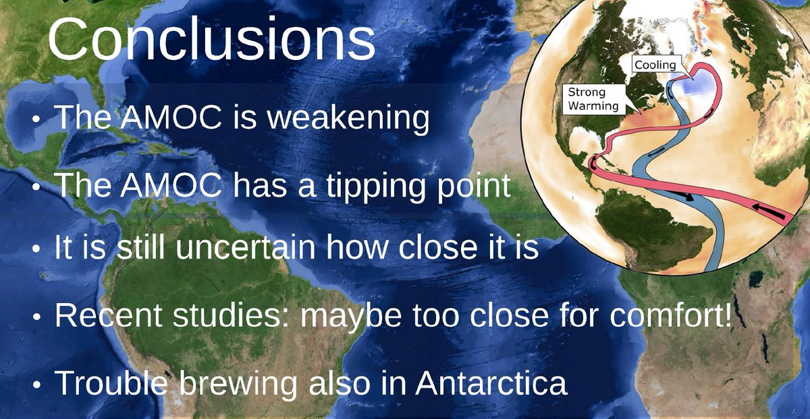
Rahmstorf (2023) X thread on AMOC Thradreader
Weakest Gulf Stream in Millenium
The Atlantic Meridional Overturning Circulation (AMOC)—one of Earth’s major ocean circulation systems—redistributes heat on our planet and has a major impact on climate. Here, we compare a variety of published proxy records to reconstruct the evolution of the AMOC since about ad 400. A fairly consistent picture of the AMOC emerges: after a long and relatively stable period, there was an initial weakening starting in the nineteenth century, followed by a second, more rapid, decline in the mid-twentieth century, leading to the weakest state of the AMOC occurring in recent decades.
Caesar (2021) AMOC Millenium Weakest (Nature Geoscience) [paywall!]
Gulf Stream Collapse
Guardian
Climate scientists have detected warning signs of the collapse of the Gulf Stream, one of the planet’s main potential tipping points.
The research found “an almost complete loss of stability over the last century” of the currents that researchers call the Atlantic meridional overturning circulation (AMOC). The currents are already at their slowest point in at least 1,600 years, but the new analysis shows they may be nearing a shutdown.
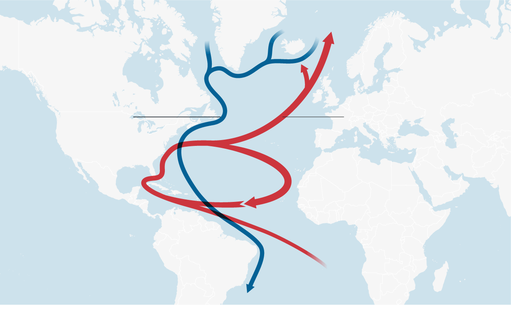
Figure: North Atlantic Circulation. Blue - Cold Deep Water, Red - Warm Surface Water
Thornally Abstract
The Atlantic meridional overturning circulation (AMOC) is a system of ocean currents that has an essential role in Earth’s climate, redistributing heat and influencing the carbon cycle. The AMOC has been shown to be weakening in recent years; this decline may reflect decadal-scale variability in convection in the Labrador Sea, but short observational datasets preclude a longer-term perspective on the modern state and variability of Labrador Sea convection and the AMOC1. Here we provide several lines of palaeo-oceanographic evidence that Labrador Sea deep convection and the AMOC have been anomalously weak over the past 150 years or so (since the end of the Little Ice Age, LIA, approximately ad 1850) compared with the preceding 1,500 years. Our palaeoclimate reconstructions indicate that the transition occurred either as a predominantly abrupt shift towards the end of the LIA, or as a more gradual, continued decline over the past 150 years; this ambiguity probably arises from non-AMOC influences on the various proxies or from the different sensitivities of these proxies to individual components of the AMOC. We suggest that enhanced freshwater fluxes from the Arctic and Nordic seas towards the end of the LIA—sourced from melting glaciers and thickened sea ice that developed earlier in the LIA—weakened Labrador Sea convection and the AMOC. The lack of a subsequent recovery may have resulted from hysteresis or from twentieth-century melting of the Greenland Ice Sheet. Our results suggest that recent decadal variability in Labrador Sea convection and the AMOC has occurred during an atypical, weak background state. Future work should aim to constrain the roles of internal climate variability and early anthropogenic forcing in the AMOC weakening described here.
Caesar Abstract
The Atlantic meridional overturning circulation (AMOC)—a system of ocean currents in the North Atlantic—has a major impact on climate, yet its evolution during the industrial era is poorly known owing to a lack of direct current measurements. Here we provide evidence for a weakening of the AMOC by about 3 ± 1 sverdrups (around 15 per cent) since the mid-twentieth century. This weakening is revealed by a characteristic spatial and seasonal sea-surface temperature ‘fingerprint’—consisting of a pattern of cooling in the subpolar Atlantic Ocean and warming in the Gulf Stream region—and is calibrated through an ensemble of model simulations from the CMIP5 project. We find this fingerprint both in a high-resolution climate model in response to increasing atmospheric carbon dioxide concentrations, and in the temperature trends observed since the late nineteenth century. The pattern can be explained by a slowdown in the AMOC and reduced northward heat transport, as well as an associated northward shift of the Gulf Stream. Comparisons with recent direct measurements from the RAPID project and several other studies provide a consistent depiction of record-low AMOC values in recent years.
Caesar (2018) Observed fingerprint of a weakening Atlantic Ocean overturning circulation (PayWall) SharedIt
20.8.1 The Rise and Fall of AMOC
The AMO is simply an artifact of studies that misinterpret the time-varying pattern of human-caused climate change as a low-frequency oscillation
At times I feel like I created a monster when I gave a name to this putative climate oscillation in 2000. The concept of the AMO has since been misapplied and misrepresented to explain away just about every climate trend under the sun, often based on flawed statistical methods that don’t properly distinguish a true climate oscillation from a time-varying trend: If you assume that all trends are a simple linear ramp, and call everything left-over an “oscillation”, then the simple fact that global warming flattened out from the 1950s through the 1970s driven by the ramp-up in cooling sulphate aerosol pollution masquerades as an apparent “oscillation” on top of a simple linear trend. We’ve published a number of articles over the years (see e.g. here, here, here, here, here, and here) demonstrating that studies that use such an approach to define the AMO end up mis-attributing to a natural “oscillation” what is actually human-caused climate change. Such analyses have been used by some to dismiss, among other things, the impact climate change is having on increasingly active and destructive Atlantic hurricane seasons, attributing the increase in recent decades to a supposed upturn in the AMO.
20.8.2 Rethinking AMOC
Chafik
A weakened AMOC may have played a role in causing almost 600 years’ worth of frigid winters in Europe and North America. This period, called the Little Ice Age, lasted roughly from 1300 until 1870 and came on the heels of the Medieval Warm Period (circa 950–1250), when temperatures in the Northern Hemisphere were unusually warm.

Figure: This simplified view (top) shows the surface flows (red arrows) and deep return flows (blue arrows) that make up the large-scale ocean circulation in the North Atlantic. Color bands on the ocean surface indicate average sea surface temperatures from 1900 to 2019 (data are from the Hadley Centre) and highlight the northward extent of warm waters to higher latitudes. The longitude-depth temperature distribution of the ocean (bottom; data are from the World Ocean Atlas 2018) across the Greenland-Scotland Ridge (GSR, white transect line in the top panel) is also shown. The exchange of waters across the GSR is driven by the rapid loss of heat to the atmosphere over the Nordic Seas. This heat loss causes the waters to sink and build a huge reservoir of cold, dense water that spills back into the deep North Atlantic across the GSR, completing the overturning process.
Nearly half of the AMOC’s poleward flow of warm, salty waters enters the Nordic Seas—comprising the Greenland, Iceland, and Norwegian Seas. Here the water cools and pools north of the undersea Greenland-Scotland Ridge (GSR). A host of important questions remains about the dynamics of the ocean near the GSR and the effects of these dynamics on regulating climate.
The AMOC has two pathways of overturning circulation. One is open ocean convection in the Irminger and Labrador Seas that produces the upper layer of North Atlantic Deep Water (NADW). The second involves progressive cooling of warm, salty water from the Atlantic in the Nordic Seas. This cooling results in dense water spilling over the GSR back into the North Atlantic—mainly through two passages, the Denmark Strait between Greenland and Iceland and the Faroe Bank Channel south of the Faroes—and forming a lower layer of NADW.
Both regions depend upon heat loss to produce water of greater density, but it appears that huge heat losses from the Nordic Seas and the concomitant production and pooling of very dense water behind the GSR are fundamental to maintaining a mild climate in northern Europe. This heat loss produces a healthy supply of NADW that spills back into the global abyss and enables warm, salty water to feed the Nordic Seas.
Evidence of strong variability in Nordic Seas inflow on multidecadal timescales. The volume of and heat transported in this poleward flow, as measured at the GSR, are strongly coupled to the Atlantic multidecadal variability (AMV), which describes natural patterns of sea surface temperature variability in the North Atlantic that influence climate globally
The AMV affects Nordic Seas inflow because deep convection in the northeast Atlantic translates the surface temperature variations down into the upper layers of the ocean, and these variations shape the ocean’s dynamic height field.
The inflow of warm water to the Nordic Seas has been quite stable over the past century since the start of modern oceanography.
Nordic Seas overturning circulation has been stable over the past 100 years. This stability is surprising given the extraordinary warming presently underway in the Nordic Seas and Arctic Ocean. The continued stability of this vital ocean circulation system is not guaranteed in the future. It is also unclear how future change may manifest or which early-warning indicators should be relied upon to forecast change.
The recent discovery of an unknown route by which cold water courses its way through the Norwegian Sea. We identified that this new route directs cold deep flows north of the Faroe Islands to the Norwegian slope before turning them south through the Faroe-Shetland Channel and into the deep North Atlantic.
Which route water takes north of the GSR and how much is funneled each way depend on the prevailing winds.
Under weak westerly wind conditions in the Nordic Seas, the densest water that feeds the Faroe Bank Channel comes primarily from north of Iceland. During strong westerly wind conditions, however, more water seems to originate from along the Jan Mayen Ridge, which is located farther north of Iceland and more in the middle of the Nordic Seas. This wind dependence is curious, considering the strong control that bathymetry can exert on the circulation.
Deep rapid flow, or deep jet, called the Faroe-Shetland Channel Jet. Remarkably, this jet flows south along the eastern slope of the channel rather than along the western side as has long been assumed. The deep jet is found to be the main current branch in terms of transport that delivers the densest water to the North Atlantic Ocean via the Faroe Bank Channel. This surprising finding countered past observations and thinking.
We do not yet have a firm grasp of the deep circulation of the Nordic Seas and how it varies over time.
All available observational evidence so far indicates that there is no long-term trend in the Nordic Seas meridional overturning circulation to date.
The degree to which fresh water from the Arctic and Greenland Sea can mix with and dilute warm, saline water from the Atlantic. Such dilution could suppress deep temperature- and density-driven convection, thus weakening or shutting down the overturning in the Nordic Seas and, by extension, the deepest component of the AMOC.
However, most scientists no longer think such a shutdown scenario is likely because observations to date indicate that Arctic and Greenland waters tend to remain trapped around and south of Greenland rather than mixing and diluting the Atlantic water flowing north in the Nordic Seas
Nonetheless, there is broad agreement that the climatic consequences of a potential shutdown of this vital ocean circulation are so enormous that they obligate us to improve our understanding of the Nordic Seas.
Chafik (2021) Rethinking Oceanic Overturning in Nordic Seas
Stefan
(Referring to Caesar (above))
The Atlantic overturning circulation (sometimes popularly dubbed the Gulf Stream System) has weakened significantly since the late 19th Century, with most of the decline happening since the mid-20th Century.
The prime observational finding, is a long-term cooling trend in the subpolar Atlantic – the only region in the world which has cooled while the rest of the planet has warmed.
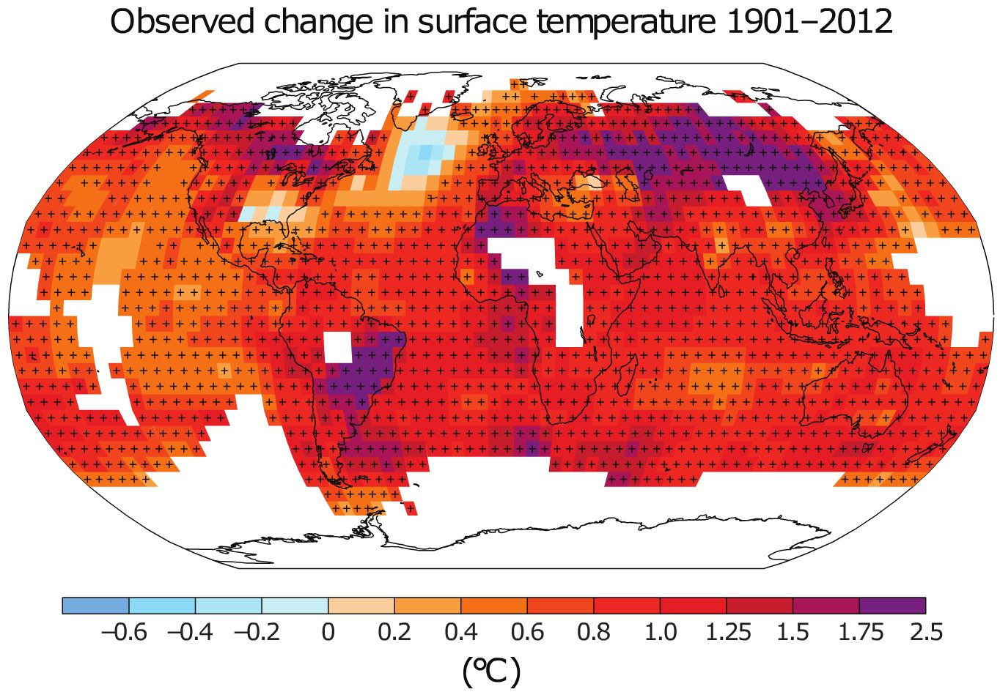
Figure: Observed temperature trends since the beginning of the 20th Century
What explains this cold blob?
If the ocean temperature in any region changes, this can only be due to a change in heat supply or loss. That can either be a change in heat flow via ocean currents or through the sea surface. Thus the subpolar Atlantic can either have cooled because the ocean currents are bringing less heat into this region, or alternatively because more heat is being lost to the atmosphere.
Weather dominates the short-term fluctuations, but the ocean currents dominate the long-term development because of the longer response time scale and “memory” of the ocean.
There is a significant correlation of the NAO with subpolar Atlantic surface temperatures. But on the longer time scales of interest to us (for 20-year smoothed data), changes in the sea surface temperature lead the NAO changes by three years. We conclude that changes in sea surface temperatures cause the changes in NAO and not vice versa.
In summer, the effect of heat flow through the sea surface should dominate, in winter the effect of ocean currents. That is because the well-mixed surface layer of the ocean is thin, so only the uppermost part of the ocean heat transport gets to affect the surface temperature. But the thin surface layer still feels the full brunt of atmospheric changes, and even stronger than in winter, because the thermal inertia of the thin summer surface layer is small.
The cooling in the “cold blob” is most pronounced in winter. That suggests the ‘cold blob’ is driven from the ocean and not the atmosphere.
AMOC is the dominant mechanism of heat transport into the high-latitude Atlantic. Across the different models, differences in the amount of AMOC slowdown nearly completely explain the differences in subpolar Atlantic temperatures.
We have the conclusion by Kanzow et al. from hydrographic sections that the AMOC has weakened by ~ 10% since the 1950s (see below). And the Nitrogen-15 data of Sherwood et al. indicating a water mass change that matches what is predicted by the CM2.6 model for an AMOC slowdown. And the subsurface Atlantic temperature proxy data published recently by Thornalley et al. Plus there is work suggesting a weakening open-ocean convection. And finally, our time evolution of the AMOC that we proposed based on our AMOC index, i.e. based on the temperatures in the cold blob region, for the past decades matches evidence from ocean reanalysis and the RAPID project. Some of these other data are shown together with our AMOC index below.
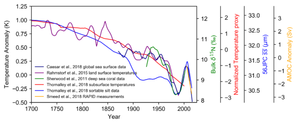
Figure: Time evolution of the Atlantic overturning circulation reconstructed from different data types since 1700. The scales on the left and right indicate the units of the different data types. The lighter blue curve was shifted to the right by 12 years since Thornalley found the best correlation with temperature with this lag. Our index is the dark blue line starting in 1870. Graph: Levke Caesar.
Measuring the AMOC at a particular latitude in principle requires measuring a cross-section across the entire Atlantic, from surface to bottom. There are only two data sets that aspire to measure AMOC changes in this way. First, the RAPID project which has deployed 226 moored measuring instruments at 26.5 ° North for that purpose since 2004. It shows a downward trend since then, which closely matches what we find with our temperature-based AMOC index. Second is the work by Kanzow et al. (2010) using results of five research expeditions across the Atlantic between 1957 and 2004, correcting an earlier paper by Bryden et al. for seasonal effects and finding a roughly 10% decline over this period (in terms of the linear trend of these five data points).
Some other measurements cover parts of the overturning circulation, and generally for short periods only. For 1994-2013, Rossby et al. (2013) – at the Oleander line between 32° and 40° North – found a decrease in the upper 2000m transport of the Gulf Stream by 0.8 Sverdrup (a Sverdrup is a flow of a million cubic meters per second).
It is important to realize that the AMOC is not the same as the Gulf Stream. The latter, as measured by Rossby, has a volume flow of ~90 Sverdrup, while the AMOC has a volume flow of only 15-20 Sverdrup. While the upper northward branch of the AMOC does flow via the Gulf Stream, it thus only contributes about one fifth to the Gulf Stream flow. Any change in Gulf Stream strength could thus be due to a change in the other 80% of Gulf Stream flow, which are wind-driven. The AMOC does however provide the major northward heat transport which affects the northern Atlantic climate, because its return flow is cold and deep. Most of the Gulf Stream flow, in contrast, returns toward the south near the sea surface at a similar temperature as it flowed north, thus leaving little heat behind in the north.
One interesting question for further research is how the AMOC in the Atlantic is linked to the exchange with the Nordic Seas across a line between Greenland, Iceland and Scotland. In our 2015 paper we showed a model result suggesting an anti-correlation of these overflows with the AMOC, and our new paper suggests a similar thing: a warm anomaly off Norway coinciding with the cold anomaly in the subpolar Atlantic, both in the high-resolution CM2.6 model and the observations.
Cold meltwater from Greenland flowing in? You can work that out from a simple heat budget calculation. The amount is far too small to matter for the large-scale sea surface temperature, but enough to matter for sea surface salinity.
Stefan (2018) If you doubt that the AMOC has weakened, read this
PIK
Because ongoing direct AMOC measurements only started in 2004, the researchers applied an indirect approach, using so-called proxy data, to find out more about the long-term perspective of its decline. Proxy data, as witnesses of the past, consist of information gathered from natural environmental archives such as tree rings, ice cores, ocean sediments, and corals, as well as from historical data, for instance from ship logs. “We used a combination of three different types of data to obtain information about the ocean currents: temperature patterns in the Atlantic Ocean, subsurface water mass properties and deep-sea sediment grain sizes, dating back from 100 to ca. 1600 years. While the individual proxy data is imperfect in representing the AMOC evolution, the combination of them revealed a robust picture of the overturning circulation
[](fig/PIK_Gulf_Stream.jpeg
An AMOC slowdown has long been predicted by climate models as a response to global warming caused by greenhouse gases – according to a number of studies, this is likely the reason for the observed weakening. The Atlantic overturning is driven by what the scientists call deep convection, triggered by the differences in the density of the ocean water: Warm and salty water moves from the south to the north where it cools down and thus gets denser. When it is heavy enough the water sinks to deeper ocean layers and flows back to the south. Global warming disturbs this mechanism: Increased rainfall and enhanced melting of the Greenland Ice Sheet add fresh water to the surface ocean. This reduces the salinity and thus the density of the water, inhibiting the sinking and thus weakening the flow of the AMOC. Its weakening has also been linked to a unique substantial cooling of the northern Atlantic over the past hundred years. This so-called ‘cold blob’ was predicted by climate models as a result of a weakening AMOC, which transports less heat into this region.
The northward surface flow of the AMOC leads to a deflection of water masses to the right, away from the US east coast. This is due to Earth’s rotation that diverts moving objects such as currents to the right in the northern hemisphere and to the left in the southern hemisphere. As the current slows down, this effect weakens and more water can pile up at the US east coast, leading to an enhanced sea level rise.
In Europe, a further slowdown of the AMOC could imply more extreme weather events like a change of the winter storm track coming off the Atlantic, possibly intensifying them. Other studies found possible consequences being extreme heat waves or a decrease in summer rainfall.
If we continue to drive global warming, the Gulf Stream System will weaken further – by 34 to 45 percent by 2100 according to the latest generation of climate models. This could bring us dangerously close to the tipping point at which the flow becomes unstable.
20.8.3 AMOC Collapse EWS (Early Warning Signals)
Ditlevsen
[See also under ‘Statistics/Collapse’]
Ditlevsen Abstract
The Atlantic meridional overturning circulation (AMOC) is a major tipping element in the climate system and a future collapse would have severe impacts on the climate in the North Atlantic region. In recent years weakening in cir- culation has been reported, but assessments by the Intergovernmental Panel on Climate Change (IPCC), based on the Climate Model Intercomparison Project (CMIP) model simulations suggest that a full collapse is unlikely within the 21st century. Tipping to an undesired state in the climate is, however, a growing concern with increasing greenhouse gas concentrations. Predictions based on observations rely on detecting early-warning signals, primarily an increase in variance (loss of resilience) and increased autocorrelation (critical slowing down), which have recently been reported for the AMOC. Here we provide statistical significance and data-driven estimators for the time of tip- ping. We estimate a collapse of the AMOC to occur around mid-century under the current scenario of future emissions.
Ditlevsen (2023) Warning of a forthcoming collapse of the Atlantic meridional overturning circulation (pdf)
20.8.4 Gulf Stream weakening - measurements
Piecuch Abstract
The Gulf Stream is a vital limb of the North Atlantic circulation that influences regional climate, sea level, and hurricane activity. Given the Gulf Stream’s relevance to weather and climate, many studies have attempted to estimate trends in its volumetric transport from various data sets, but results have been inconclusive, and no consensus has emerged whether it is weakening with climate change. Here we use Bayesian analysis to jointly assimilate multiple observational data sets from the Florida Straits to quantify uncertainty and change in Gulf Stream volume transport since 1982. We find with virtual certainty (probability P > 99%) that Gulf Stream volume transport through the Florida Straits declined by 1.2 ± 1.0 Sv in the past 40 years (95% credible interval). This significant trend has emerged from the data set only over the past ten years, the first unequivocal evidence for a recent multidecadal decline in this climate-relevant component of ocean circulation.
Piecuch Summary
The Gulf Stream is a major ocean current located off the East Coast of the United States. It carries a tremendous amount of seawater and along with it heat, carbon, and other ocean constituents. Because of this, the Gulf Stream plays an important role in weather and climate, influencing phenomena as seemingly unrelated as sea level along coastal Florida and temperature and precipitation over continental Europe. Given how important this ocean current is to science and society, scientists have tried to determine whether the Gulf Stream has undergone significant changes under global warming, but so far, they have not reached a firm conclusion. Here we report our effort to synthesize available Gulf Stream observations from the Florida Straits near Miami, and to assess whether and how the Gulf Stream transport there has changed since 1982. We conclude with a high degree of confidence that Gulf Stream transport has indeed slowed by about 4% in the past 40 years, the first conclusive, unambiguous observational evidence that this ocean current has undergone significant change in the recent past. Future studies should try to identify the cause of this change.
20.9 Denmark Strait cataract
Puiu
The Denmark Strait’s underwater waterfall — known as the Denmark Strait cataract — plays a pivotal role in the intricate dance of the Atlantic’s thermohaline circulation, which influences our planet’s climate on a global scale. The journey begins in the Arctic, where surface water cools and gains density, causing it to sink and flow toward lower latitudes.
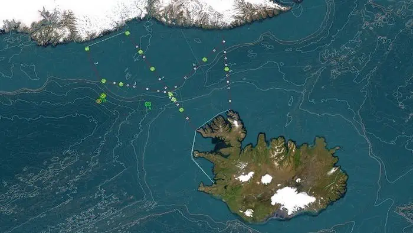
Following the contours of the seafloor, this immense current accelerates as it encounters the submarine relief of the Denmark Strait, transforming into a breathtaking waterfall beneath the waves. Eventually, it converges with the great troughs of the northern Atlantic Ocean, leaving an indelible mark on the deep-sea ecosystems thriving in the area.
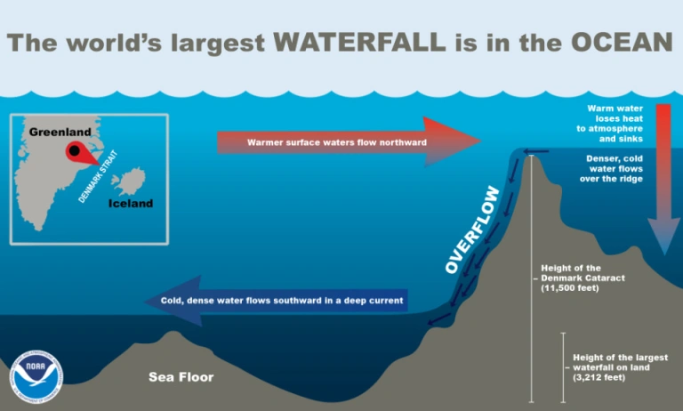
While the scientific community has dedicated considerable efforts to studying the hydrodynamic properties of this underwater marvel, many aspects of its behavior remain shrouded in mystery.
This is where the FAR-DWO oceanographic campaign, led by Professors David Amblàs and Anna Sanchez-Vidal from the University of Barcelona, comes in.
From July 19 to August 12, 2023, the team boarded the oceanographic ship Sarmiento de Gamboa and embarked on an unprecedented journey.
“To date, we have examined the hydrodynamic characteristics of this colossal underwater cataract. However, in the FAR-DWO expedition, our goal is to delve into unexplored realms,” explained David Amblàs and Anna Sanchez-Vidal from the University of Barcelona’s Department of Earth and Ocean Dynamics.
“We will investigate its capacity to transport sediments, its role in shaping the seabed relief, and the influence of topography on its propagation.”
During the campaign, the team analyzed the hydrographic and sedimentological variability of the waterfall by sampling and observing the water column, as well as studying the sediment and seafloor relief. Two lines equipped with instruments were deployed at great depths, continuously recording hydrological information until their recovery in September 2024. The results are still pending.
The researchers in Barcelona have quite a bit of experience. Their groundbreaking 2008 study revealed the existence of dense water cascades in the Cap de Creus canyon, along the northern coast of Catalonia in the northwestern Mediterranean.
They plan to combine observational data from both marine areas with a numerical hydrosedimentary model, providing a groundbreaking quantification of the underwater cascades’ transformative power.
Puiu (2023) The world’s largest waterfall is actually underwater
20.10 Whale Mitigation
Chami
When it comes to saving the planet, one whale is worth thousands of trees.
Many proposed solutions to global warming, such as capturing carbon directly from the air and burying it deep in the earth, are complex, untested, and expensive. What if there were a low-tech solution to this problem that not only is effective and economical, but also has a successful funding model?
An example of such an opportunity comes from a surprisingly simple and essentially “no-tech” strategy to capture more carbon from the atmosphere: increase global whale populations.
Marine biologists have recently discovered that whales—especially the great whales—play a significant role in capturing carbon from the atmosphere (Roman and others 2014). And international organizations have implemented programs such as Reducing Emissions from Degradation and Deforestation (REDD) that fund the preservation of carbon-capturing ecosystems.
The carbon capture potential of whales is truly startling. Whales accumulate carbon in their bodies during their long lives. When they die, they sink to the bottom of the ocean; each great whale sequesters 33 tons of CO2 on average, taking that carbon out of the atmosphere for centuries. A tree, meanwhile, absorbs only up to 48 pounds of CO2 a year.
Protecting whales could add significantly to carbon capture because the current population of the largest great whales is only a small fraction of what it once was. Sadly, after decades of industrialized whaling, biologists estimate that overall whale populations are now to less than one fourth what they once were. Some species, like the blue whales, have been reduced to only 3 percent of their previous abundance. Thus, the benefits from whales’ ecosystem services to us and to our survival are much less than they could be.
Whale Pump
Wherever whales, the largest living things on earth, are found, so are populations of some of the smallest, phytoplankton. These microscopic creatures not only contribute at least 50 percent of all oxygen to our atmosphere, they do so by capturing about 37 billion metric tons of CO2, an estimated 40 percent of all CO2 produced. To put things in perspective, we calculate that this is equivalent to the amount of CO2 captured by 1.70 trillion trees—four Amazon forests’ worth—or 70 times the amount absorbed by all the trees in the US Redwood National and State Parks each year. More phytoplankton means more carbon capture.
In recent years, scientists have discovered that whales have a multiplier effect of increasing phytoplankton production wherever they go. How? It turns out that whales’ waste products contain exactly the substances—notably iron and nitrogen—phytoplankton need to grow. Whales bring minerals up to the ocean surface through their vertical movement, called the “whale pump,” and through their migration across oceans, called the “whale conveyor belt.
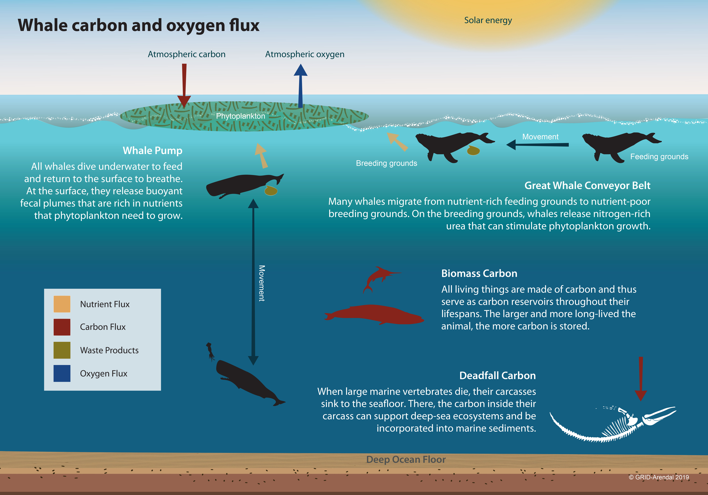
Despite the fact that nutrients are carried into the ocean through dust storms, river sediments, and upwelling from wind and waves, nitrogen and phosphorus remain scarce and limit the amount of phytoplankton that can bloom in warmer parts of the oceans. In colder regions, such as in the Southern Ocean, the limiting mineral tends to be iron. If more of these missing minerals became available in parts of the ocean where they are scarce, more phytoplankton could grow, potentially absorbing much more carbon than otherwise possible.
If whales were allowed to return to their pre-whaling number of 4 to 5 million—from slightly more than 1.3 million today—it could add significantly to the amount of phytoplankton in the oceans and to the carbon they capture each year.
Despite the drastic reduction in commercial whaling, whales still face significant life-threatening hazards, including ship strikes, entanglement in fishing nets, waterborne plastic waste, and noise pollution. While some species of whales are recovering—slowly—many are not.
Enhancing protection of whales from human-made dangers would deliver benefits to ourselves, the planet, and of course, the whales themselves. This “earth-tech” approach to carbon sequestration also avoids the risk of unanticipated harm from suggested untested high-tech fixes. Nature has had millions of years to perfect her whale-based carbon sink technology. All we need to do is let the whales live.
Finance!
International financial institutions, in partnership with other UN and multilateral organizations, are ideally suited to advise, monitor, and coordinate the actions of countries in protecting whales.
Whales are commonly found in the waters around low-income and fragile states, countries that may be unable to deal with the needed mitigation measures. Support for these countries could come, for example, from the Global Environment Facility, which typically provides support to such countries to meet international environmental agreements. The IMF is also well placed to help governments integrate the macroeconomic benefit that whales provide in mitigating climate change, as well as the cost of measures to protect the whales, into their macro-fiscal frameworks. The World Bank has the expertise to design and implement specific programs to compensate private sector actors for their efforts to protect whales. Other UN and multilateral organizations can oversee compliance and collect data to measure the progress of these efforts.
Coordinating the economics of whale protection must rise to the top of the global community’s climate agenda.
Earth-Tech
The “earth-tech” strategy of supporting whales’ return to their previous abundance in the oceans would significantly benefit not only life in the oceans but also life on land, including our own.
Chami IMF (2019) Protect Whales - Limit Global Warming (pdf)
Meynecke
Whales have been titled climate savers in the media with their recovery welcomed as a potential carbon solution. However, only a few studies were performed to date providing data or model outputs to support the hypothesis. Following an outline of the primary mechanisms by which baleen whales remove carbon from the atmosphere for eventual sequestration at regional and global scales, we conclude that the amount of carbon whales are potentially sequestering might be too little to meaningfully alter the course of climate change. This is in contrast to media perpetuating whales as climate engineers. Creating false hope in the ability of charismatic species to be climate engineers may act to further delay the urgent behavioral change needed to avert catastrophic climate change impacts, which can in turn have indirect consequences for the recovery of whale populations. Nevertheless, whales are important components of marine ecosystems, and any further investigation on existing gaps in their ecology will contribute to clarifying their contribution to the ocean carbon cycle, a major driver of the world’s climate. While whales are vital to the healthy functioning of marine ecosystems, overstating their ability to prevent or counterbalance anthropogenically induced changes in global carbon budget may unintentionally redirect attention from known, well-established methods of reducing greenhouse gases. Large scale protection of marine environments including the habitats of whales will build resilience and assist with natural carbon capture.
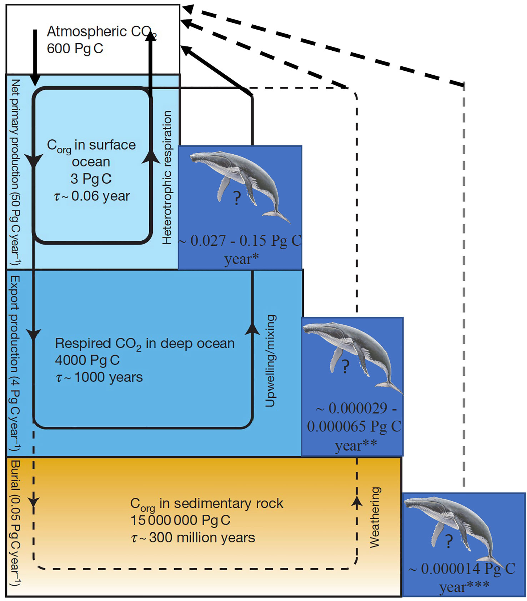
Figure: The nested cycles of marine organic carbon (Corg), including (1) net primary production and heterotrophic respiration in the surface ocean, (2) export production from the surface ocean and respiration in the deep sea followed by upwelling or mixing of the respired CO2 back to the surface ocean (the soft-tissue component of the biological pump); and (3) the burial of sedimentary organic carbon. Also shown are the indicative residence times (r). Note that carbon reservoirs shown refer solely to the fraction affected by organic carbon cycling; for instance, the deep-ocean value shown is of carbon dioxide produced by respiration, not the carbon released from CaCO3 dissolution.
For whales to play a role in reducing atmospheric CO2 concentrations, they need to influence the biological pump such that there is an increase in (i) the export of organic carbon from the surface to the deep ocean and/or (ii) the amount removed from the ocean and entering the slower sediment circuit.
Meynecke (2023) Do whales really increase the oceanic removal of atmospheric carbon?
Nyhus
Giganten tar med seg klimagassar i grava - Presset aukar på Noreg for å byggje opp att kvalbestanden. Men klimagevinsten til kvalane er omstridd.
Kvalar som døyr naturleg og søkk til botn tek med seg store mengder karbon i grava og «fangar» ho for godt.
Men kor mykje?
Det internasjonale pengefondet (IMF) har taksert denne «karbonfangsten» til ein verdi av 2 milliardar dollar.
Reknestykket legg til grunn at 1000 kvalar blir drepne kvart år. I 2022 tok Noreg livet av 581 vågekval.
I ein ny forskingsartikkel går forfattarane i rette med forteljinga om kvalen som naturen sin eigen vaktmester og «klimaentreprenør».
I artikkelen skriv dei at kvalen sin tiltrekkingskraft på mennesket skaper «
» om at vegen til klimafrelse går gjennom den store skapningen.
– Kva rolle kvalane speler med omsyn til klima er flittig diskutert i forskarmiljøa, seier Martin Biuw, som leier forskingsgruppa for sjøpattedyr ved Havforskingsinstituttet.
Han legg til:
– Det er langt frå klarlagt kor viktig denne rolla eigentleg er.
For å klarleggje kvalen si rolle i karbonsyklusen er Havforskingsinstituttet med i eit internasjonalt partnarskap for å forstå krinsløpet betre.
Å talfeste bidraget til kvalen i den store marine karbonpumpa er prega av stor uvisse, seier Joakim Hauge i Bellona.
Han presiserer:
– Når det er sagt, er det ikkje tvil om at å leggje til rette for store kvalpopulasjonar vil bidra til stor karbonlagring.
Med utgangspunkt i at ingenting styrar åtferd meir enn lommeboka, har chilenske styresmakter oppretta ei prøveordning med «biokredittar» der båtførarar som forstyrrar kvalen må betale ei «kvalavgift».
Meir naturleg å satse på kvalen enn regnskogen
I 1972 vart kvalen eit symbol på FNs miljøvernerklæring, og har sidan skapt gnissingar mellom verdssamfunnet og Noreg.
Noreg, Japan og Island er dei einaste landa i verda som framleis tillèt kvalfangst.
Under den globale fangsttoppen rundt 1960 vart om lag 75.000 kval drepne kvart år.
I dag reknar Den Internasjonale kvalfangstkommisjonen (IWC) med at det svømmer 1,5 millionar rundt i verdshava.
For hundre år sidan var talet 4,5 millionar.
Slik frakter hvalen næringsstoffer og mineraler Ekspander/minimer faktaboks
Professor i bevaringsbiologi Anne Sverdrup-Thygeson skriver om «hvalfall» og hvalens bidrag til karbonsyklusen i boka På naturens skuldre (2020).
Boka er anmeldt her.
Et utdrag:
«En sjelden gang kommer det noe skikkelig digert dalende ned fra oven. Et hvalfall. Bare ordet er nok til å få det til å krible i hjernevindingene mine. For mitt indre blikk ser jeg for meg hvordan et enormt berg av kjøtt og spekk og bein synker sakte, majestetisk, nedover i vannmassene. Tonnevis med karbon, nitrogen, kalsium, fosfor, i livets siste dykk.
(…)
Forskerne har sett på hvordan de store hvalene, som knølhval, spermhval og blåhval, bidrar til å pumpe næring til de delene av havet der det trengs mer. Disse hvalene dykker dypt i havet for å hente føde av ulike slag – fisk, blekksprut eller krill. Så svømmer de opp til overflaten for å puste. Her slippes også avføringen ut, og den flyter. Slik frakter hvalen næringsstoffer og mineraler (som nitrogen eller jern) opp til overflatevannet. I noen havområder, som i Sørishavet, begrenses planteplanktonets vekst nettopp av tilgangen på jern. Spermhval-avføring har en jernkonsentrasjon minst ti millioner ganger høyere enn vannet. Hvalens tilstedeværelse gir økt planteplankton-vekst, som igjen betyr mer fotosyntese og mer CO2 fanget fra atmosfæren – karbon som gjerne daler ned på havdypet som marin snø når det korte planktonlivet er over. Et forsiktig estimat fra Sørishavet antyder at spermhvalen der sender flere hundre tusen tonn karbon ut av systemet og ned til lagring på havets dyp, hvert år.
I tillegg legger mange av de store hvalene ut på lange vandringer, blant de mest imponerende årlige migrasjoner vi kjenner til blant pattedyra. Knølhvalen, for eksempel, beiter i kaldt, næringsrikt vann på høye breddegrader, men forflytter seg til varmere, typisk 124 | på naturens skuldre mindre næringsrike havområder nærmere ekvator for å kalve. Som oftest spiser ikke hvalene mens de er i kalvingsområdene, de bare tærer på fettet. Men tisse må de, og urinen de slipper ut, er rik på nitrogen, som ofte er mangelvare i disse farvannene (og det monner når du er stor – en islandsk forsker anslår at en gjennomsnittlig finnhval tisser 974 liter i døgnet …). Slik blir hvalenes langturer en del av et transportbånd for næring, fra rike hav til næringsfattige havområder.»
20.11 Antarctica’s Role
Climate change is rapidly pushing five critical, interconnected processes in the Antarctic Southern Ocean towards substantial changes. It warns that disrupting these processes may disproportionately exacerbate global climate change and have widespread impacts on marine and human life worldwide, due to the region’s central role in regulating our earth systems.
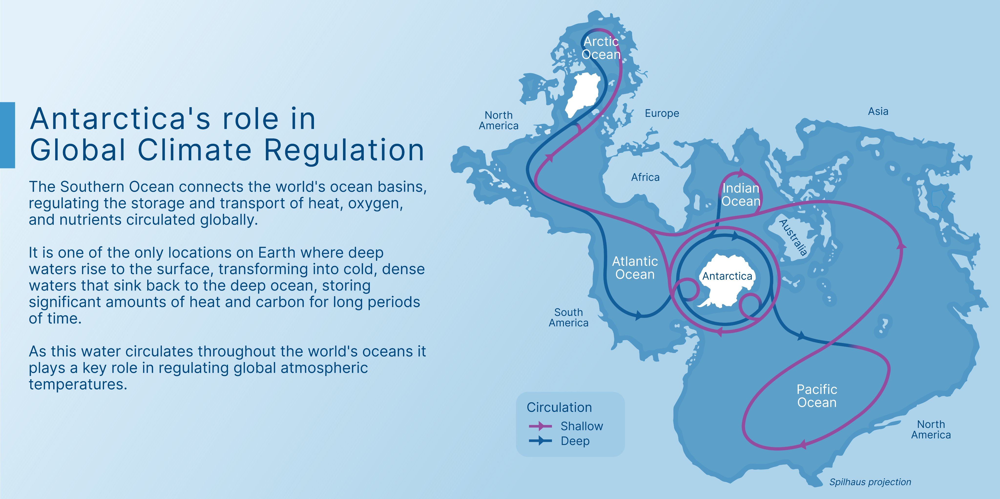
20.12 Failing phytoplankton, failing oxygen
University of Lancaster
Falling oxygen levels caused by global warming could be a greater threat to the survival of life on planet Earth than flooding, according to researchers from the University of Leicester.
A study led by Sergei Petrovskii, Professor in Applied Mathematics from the University of Leicester’s Department of Mathematics, has shown that an increase in the water temperature of the world’s oceans of around six degrees Celsius – which some scientists predict could occur as soon as 2100 – could stop oxygen production by phytoplankton by disrupting the process of photosynthesis.
Professor Petrovskii explained: “Global warming has been a focus of attention of science and politics for about two decades now. A lot has been said about its expected disastrous consequences; perhaps the most notorious is the global flooding that may result from melting of Antarctic ice if the warming exceeds a few degrees compared to the pre-industrial level. However, it now appears that this is probably not the biggest danger that the warming can cause to the humanity.
“About two-thirds of the planet’s total atmospheric oxygen is produced by ocean phytoplankton – and therefore cessation would result in the depletion of atmospheric oxygen on a global scale. This would likely result in the mass mortality of animals and humans.”
The team developed a new model of oxygen production in the ocean that takes into account basic interactions in the plankton community, such as oxygen production in photosynthesis, oxygen consumption because of plankton breathing and zooplankton feeding on phytoplankton.
While mainstream research often focuses on the CO2 cycle, as carbon dioxide is the agent mainly responsible for global warming, few researchers have explored the effects of global warming on oxygen production.
The 2015 United Nations Climate Change Conference will be held in Le Bourget, Paris, from November 30 to December 11. It will be the 21st yearly session of the Conference of the Parties to the 1992 United Nations Framework Convention on Climate Change (UNFCCC) and the 11th session of the Meeting of the Parties to the 1997 Kyoto Protocol. The conference objective is to achieve a legally binding and universal agreement on climate, from all the nations of the world.
University of Lancaster (2015)
Petrovski Abstract
Ocean dynamics is known to have a strong effect on the global climate change and on the composition of the atmosphere. In particular, it is estimated that about 70 % of the atmospheric oxygen is produced in the oceans due to the photosynthetic activity of phytoplankton. However, the rate of oxygen production depends on water temperature and hence can be affected by the global warming. In this paper, we address this issue theoretically by considering a model of a coupled plankton–oxygen dynamics where the rate of oxygen production slowly changes with time to account for the ocean warming. We show that a sustainable oxygen production is only possible in an intermediate range of the production rate. If, in the course of time, the oxygen production rate becomes too low or too high, the system’s dynamics changes abruptly, resulting in the oxygen depletion and plankton extinction. Our results indicate that the depletion of atmospheric oxygen on global scale (which, if happens, obviously can kill most of life on Earth) is another possible catastrophic consequence of the global warming, a global ecological disaster that has been overlooked.